# install packages from CRAN
install.packages(pkgs = c("Rcpp", "RcppArmadillo", "picante", "ggpubr", "pheatmap"), dependencies = TRUE)
# install packages from Bioconductor
if (!require("BiocManager", quietly = TRUE))
install.packages("BiocManager")
BiocManager::install("dada2", version = "3.15", update = FALSE)
# if the dada2 install returns a warning for BiocParallel, install from binary using this command:
# BiocManager::install("BiocParallel", version = "3.15", type="binary", update = FALSE)
BiocManager::install("DESeq2")
BiocManager::install("phyloseq")
BiocManager::install("ANCOMBC")1 Workshop instructors
Dr. Steve Kembel, Zihui Wang, and Salix Dubois
2 Overview
This workshop will give an overview of the theory and practice of using amplicon sequencing approaches to study the diversity of microbial communities. In the first part of the workshop, we will discuss current methods for microbiome quantification using amplicon sequencing approaches. In the second part of the workshop, we will discuss normalization and diversity analysis approaches that can be used to quantify the diversity of microbial communities.
This workshop was developed with support from the NSERC CREATE Computational Biodiversity Science and Services (BIOS²) training program and the Canada Research Chair in Plant Microbiomes.
3 Workshop materials
Day 1 - Microbiome quantification using amplicon sequencing approaches
- Lecture - Microbiome quantification using amplicon sequencing approaches (PDF)
- R practical - Microbiome sequence analysis workshop
- Downloads
- Sequence data and SILVA database files (~350MB download from figshare)
- R workspace Microbiome-sequence-analysis-workspace.RData
- R Markdown file used to generate the R practical document
Day 2 - Data normalization and ecological analysis of microbiome data
- Lecture - Data normalization and ecological analysis of microbiome data (PDF)
- R practical - Microbiome ecological analysis workshop
- Downloads
- Sample metadata metadata-Qleaf_BACT.csv
- DADA2 ASV sequence table seqtab.nochim.rds
- DADA2 ASV taxonomic annotations taxa.sp.rds
- R workspace Microbiome-ecological-analysis-workspace.RData
- R Markdown file used to generate the R practical document
4 Requirements
The workshop assumes basic familiarity with R/RStudio; practical exercises are based on the use of R scripts to analyse sequence data and resulting community data sets.
To be able to follow along with the practical exercises on your own computer, in addition to downloading the data files above, you will need to do the following:
Install the latest version of R for your operating system (version 4.2.0 as of May 2022): https://cran.r-project.org/
Install the latest version of RStudio for your operating system (version 2022.02.2+485 as of May 2022): https://www.rstudio.com/products/rstudio/download/
Install the packages that we will use during the workshop by executing the following code in R version 4.2.0:
5 Microbiome quantification using amplicon sequencing approaches
About the data set
In this workshop, we will be analyzing the bacterial communities found on leaves of sugar maple seedlings of different provenances planted at sites across eastern North America.
These data are taken from the article:
De Bellis, Laforest-Lapointe, Solarik, Gravel, and Kembel. 2022. Regional variation drives differences in microbial communities associated with sugar maple across a latitudinal range. Ecology (published online ahead of print). doi:10.1002/ecy.3727
For this workshop, we will work with a subset of samples from six of the nine sites sampled for the article. These samples are located in three different biomes (temperate, mixed, and boreal forests). At each site, several sugar maple seedlings were planted and harvested, and we collected bacterial DNA from the leaves. Each sample thus represents the bacterial communities on the leaves of a single sugar maple seedling. For each seedling, we have associated metadata on the provenance of the seed, the site where the seed was planted, and the biome/stand type where the seed was planted. We’ll talk more about these samples and the biological hypotheses we want to test in day 2 of the workshop.
Data file setup and download
To follow along with the code, you will need to download the raw data (FASTQ sequence files) and the SILVA taxonomy files, and place a copy of these data sets in the working directory from which you are running the code.
The data files we will use for this workshop are available for download at the following URL: https://figshare.com/articles/dataset/Data_files_for_BIOS2_Microbiome_Analysis_Workshop/19763077.
The sequence data in the folder rawdata-Qleaf_BACT consist of 74 compressed FASTQ files (2 files for each of 36 samples). These files were provided by the UQAM CERMO-FC Genomics Platform where the samples were sequenced in a multiplexed run on an Illumina MiSeq. The samples were demultiplexed into separate files based on the barcode associated with each sample, so there is a separate pair of files for each sample. One file labelled R2 contains the forward read for the sample, the other file labelled R1 contains the reverse read for the sample.
If your samples were not automatically demultiplexed by the sequencing centre, you will instead have just two files which are normally labelled R2 for forward reads and R1 for reverse reads, and you should also receive information about the sequence barcode associated with each sample. You will need to demultiplex this file yourself by using the unique barcode associated with each sample to split the single large file containing all samples together into a separate file for each sample. It is easier to not have to do this step yourself, so I recommend asking your sequencing centre how they will provide the data and request that the data be provided demultiplexed with separate files for each sample. If you do need to do the multiplexing yourself, there are numerous tools available to carry out demultplexing, including QIIME, mothur, or the standalone idemp program.
After downloading the compressed file “rawdata-Qleaf_BACT.zip” (the file is around 150MB in size), you will need to unzip the file into a folder on your computer. I suggest you place this folder in the working directory from which you are running the code for the workshop.
The SILVA taxonomy reference database files we will use for this workshop are available for download at the same URL where we found the sequence data: https://figshare.com/articles/dataset/Data_files_for_BIOS2_Microbiome_Analysis_Workshop/19763077
After downloading the compressed file “SILVA138.1.zip” (the file is around 200MB in size), you will need to unzip the file into a folder on your computer. As for the raw data, I suggest you place this folder in the working directory from which you are running the code for the workshop.
This workshop uses the most recent version of the SILVA taxonomy currently available, which is version 138.1. There are up-to-date DADA2 formatted versions of the SILVA database along with other databases available at the DADA2 website.
Install the DADA2 package
You will need to install the most recent version of the DADA2 R package. At the time of writing this workshop, this is DADA2 version 1.24.0. There are instructions for installing the DADA2 package here. The command below works to install DADA2 version 1.24.0 using R version 4.2.0:
# install dada2 if needed
if (!requireNamespace("BiocManager", quietly = TRUE))
install.packages("BiocManager")
BiocManager::install("dada2", version = "3.15")Sequence analysis with DADA2
This workshop is based directly on the excellent DADA2 tutorial. I highly recommend following the DADA2 tutorial when working with your own data, it is constantly updated to incorporate the latest version of the analyses available in the package and has helpful tips for analysing your own data. The DADA2 tutorial goes into more depth about each of the steps in this analysis pipeline, and includes useful advice about each step of the pipeline. In this workshop, we have adapted the tutorial materials to run through the basic steps of sequence analysis to go from sequence files to an ecological matrix of ASV abundances in samples, and the taxonomic annotation of those ASVs.
We begin by loading the DADA2 package.
Load package
# load library, check version
library(dada2); packageVersion("dada2")Loading required package: Rcpp[1] '1.22.0'Set file paths
We need to set file paths so DADA2 knows where to find the raw data FASTQ files. I recommend creating a RStudio project for this workshop and placing a copy of the folder with the raw data FASTQ files in the working directory; by default in RStudio the working directory is the folder where you created the project. The exact paths below will need to be changed depending on where you placed the raw data files.
# set path to raw data FASTQ files
# here we assume the raw data are in a folder named "rawdata-Qleaf_BACT"
# in the current working directory (the directory where we created our
# RStudio project for this workshop, by default)
path <- "rawdata-Qleaf_BACT/"
# list the files found in the path - this should include 74 files with
# names like '2017-11-miseq-trimmed_R1.fastq_BC.C2.3X2.fastq.gz"
list.files(path) [1] "2017-11-miseq-trimmed_R1.fastq_AUC.C1.2X1.fastq.gz"
[2] "2017-11-miseq-trimmed_R1.fastq_AUC.C1.3.fastq.gz"
[3] "2017-11-miseq-trimmed_R1.fastq_AUC.N1.1.fastq.gz"
[4] "2017-11-miseq-trimmed_R1.fastq_AUC.N1.3.fastq.gz"
[5] "2017-11-miseq-trimmed_R1.fastq_AUC.N2.1.X1.fastq.gz"
[6] "2017-11-miseq-trimmed_R1.fastq_AUC.N2.1X2.fastq.gz"
[7] "2017-11-miseq-trimmed_R1.fastq_AUC.N2.2.fastq.gz"
[8] "2017-11-miseq-trimmed_R1.fastq_AUC.S1.1.X2.fastq.gz"
[9] "2017-11-miseq-trimmed_R1.fastq_AUC.S1X1.fastq.gz"
[10] "2017-11-miseq-trimmed_R1.fastq_AUC.S2.2.fastq.gz"
[11] "2017-11-miseq-trimmed_R1.fastq_BC.C1.2.fastq.gz"
[12] "2017-11-miseq-trimmed_R1.fastq_BC.C2.1X1.fastq.gz"
[13] "2017-11-miseq-trimmed_R1.fastq_BC.C2.3X2.fastq.gz"
[14] "2017-11-miseq-trimmed_R1.fastq_BC.C2.3X2b.fastq.gz"
[15] "2017-11-miseq-trimmed_R1.fastq_BC.N1.3X2.fastq.gz"
[16] "2017-11-miseq-trimmed_R1.fastq_BC.N1.fastq.gz"
[17] "2017-11-miseq-trimmed_R1.fastq_BC.N2.1.X3.fastq.gz"
[18] "2017-11-miseq-trimmed_R1.fastq_BC.N2.1X1.fastq.gz"
[19] "2017-11-miseq-trimmed_R1.fastq_BC.N2.1X2.fastq.gz"
[20] "2017-11-miseq-trimmed_R1.fastq_PAR.C1.1.fastq.gz"
[21] "2017-11-miseq-trimmed_R1.fastq_PAR.C1.2.fastq.gz"
[22] "2017-11-miseq-trimmed_R1.fastq_PAR.C2.3.fastq.gz"
[23] "2017-11-miseq-trimmed_R1.fastq_PAR.N1.3.fastq.gz"
[24] "2017-11-miseq-trimmed_R1.fastq_QLbactNeg19.fastq.gz"
[25] "2017-11-miseq-trimmed_R1.fastq_QLbactNeg20.fastq.gz"
[26] "2017-11-miseq-trimmed_R1.fastq_S.M.C1.3X2.fastq.gz"
[27] "2017-11-miseq-trimmed_R1.fastq_S.M.C2.3.fastq.gz"
[28] "2017-11-miseq-trimmed_R1.fastq_S.M.C2.3X2.fastq.gz"
[29] "2017-11-miseq-trimmed_R1.fastq_S.M.S1.1X1.fastq.gz"
[30] "2017-11-miseq-trimmed_R1.fastq_SF.C1.3.fastq.gz"
[31] "2017-11-miseq-trimmed_R1.fastq_SF.C2.2.fastq.gz"
[32] "2017-11-miseq-trimmed_R1.fastq_SF.N2.3.fastq.gz"
[33] "2017-11-miseq-trimmed_R1.fastq_SF.S1.3.fastq.gz"
[34] "2017-11-miseq-trimmed_R1.fastq_T2.C1.1.fastq.gz"
[35] "2017-11-miseq-trimmed_R1.fastq_T2.C2.3.fastq.gz"
[36] "2017-11-miseq-trimmed_R1.fastq_T2.N1.1.fastq.gz"
[37] "2017-11-miseq-trimmed_R1.fastq_T2.S2.1.fastq.gz"
[38] "2017-11-miseq-trimmed_R2.fastq_AUC.C1.2X1.fastq.gz"
[39] "2017-11-miseq-trimmed_R2.fastq_AUC.C1.3.fastq.gz"
[40] "2017-11-miseq-trimmed_R2.fastq_AUC.N1.1.fastq.gz"
[41] "2017-11-miseq-trimmed_R2.fastq_AUC.N1.3.fastq.gz"
[42] "2017-11-miseq-trimmed_R2.fastq_AUC.N2.1.X1.fastq.gz"
[43] "2017-11-miseq-trimmed_R2.fastq_AUC.N2.1X2.fastq.gz"
[44] "2017-11-miseq-trimmed_R2.fastq_AUC.N2.2.fastq.gz"
[45] "2017-11-miseq-trimmed_R2.fastq_AUC.S1.1.X2.fastq.gz"
[46] "2017-11-miseq-trimmed_R2.fastq_AUC.S1X1.fastq.gz"
[47] "2017-11-miseq-trimmed_R2.fastq_AUC.S2.2.fastq.gz"
[48] "2017-11-miseq-trimmed_R2.fastq_BC.C1.2.fastq.gz"
[49] "2017-11-miseq-trimmed_R2.fastq_BC.C2.1X1.fastq.gz"
[50] "2017-11-miseq-trimmed_R2.fastq_BC.C2.3X2.fastq.gz"
[51] "2017-11-miseq-trimmed_R2.fastq_BC.C2.3X2b.fastq.gz"
[52] "2017-11-miseq-trimmed_R2.fastq_BC.N1.3X2.fastq.gz"
[53] "2017-11-miseq-trimmed_R2.fastq_BC.N1.fastq.gz"
[54] "2017-11-miseq-trimmed_R2.fastq_BC.N2.1.X3.fastq.gz"
[55] "2017-11-miseq-trimmed_R2.fastq_BC.N2.1X1.fastq.gz"
[56] "2017-11-miseq-trimmed_R2.fastq_BC.N2.1X2.fastq.gz"
[57] "2017-11-miseq-trimmed_R2.fastq_PAR.C1.1.fastq.gz"
[58] "2017-11-miseq-trimmed_R2.fastq_PAR.C1.2.fastq.gz"
[59] "2017-11-miseq-trimmed_R2.fastq_PAR.C2.3.fastq.gz"
[60] "2017-11-miseq-trimmed_R2.fastq_PAR.N1.3.fastq.gz"
[61] "2017-11-miseq-trimmed_R2.fastq_QLbactNeg19.fastq.gz"
[62] "2017-11-miseq-trimmed_R2.fastq_QLbactNeg20.fastq.gz"
[63] "2017-11-miseq-trimmed_R2.fastq_S.M.C1.3X2.fastq.gz"
[64] "2017-11-miseq-trimmed_R2.fastq_S.M.C2.3.fastq.gz"
[65] "2017-11-miseq-trimmed_R2.fastq_S.M.C2.3X2.fastq.gz"
[66] "2017-11-miseq-trimmed_R2.fastq_S.M.S1.1X1.fastq.gz"
[67] "2017-11-miseq-trimmed_R2.fastq_SF.C1.3.fastq.gz"
[68] "2017-11-miseq-trimmed_R2.fastq_SF.C2.2.fastq.gz"
[69] "2017-11-miseq-trimmed_R2.fastq_SF.N2.3.fastq.gz"
[70] "2017-11-miseq-trimmed_R2.fastq_SF.S1.3.fastq.gz"
[71] "2017-11-miseq-trimmed_R2.fastq_T2.C1.1.fastq.gz"
[72] "2017-11-miseq-trimmed_R2.fastq_T2.C2.3.fastq.gz"
[73] "2017-11-miseq-trimmed_R2.fastq_T2.N1.1.fastq.gz"
[74] "2017-11-miseq-trimmed_R2.fastq_T2.S2.1.fastq.gz" Find data files and extract sample names
Now that we have the list of raw data FASTQ files, we need to process these file names to identify forward and reverse reads. For each sequence, the sequencer will create two files labelled R2 and R1. One of these files contains the forward reads, the other the reverse reads. Which file is which will depend on the protocol used to create sequencing libraries. In our case, the R2 files contain the forward reads, and the R1 files contain the reverse reads.
# Identify forward and reverse reads
# Filenames containing R2 are forward reads, R1 are reverse reads
fnFs <- sort(list.files(path, pattern="R2", full.names = TRUE))
fnRs <- sort(list.files(path, pattern="R1", full.names = TRUE))We also need to process the filenames to extract and clean up the sample names.
# FASTQ filenames have format:
# BLABLA_R1.fastq_SAMPLENAME.fastq.gz
# Extract sample names from filenames
# Split filename at "_" character, the sample name is in the third chunk
sample.names <- sapply(strsplit(basename(fnFs), "_"), `[`, 3)
# Remove extra text from the end of filenames
sample.names <- gsub(".fastq.gz", "", sample.names)
# Look at sample names after processing
sample.names [1] "AUC.C1.2X1" "AUC.C1.3" "AUC.N1.1" "AUC.N1.3" "AUC.N2.1.X1"
[6] "AUC.N2.1X2" "AUC.N2.2" "AUC.S1.1.X2" "AUC.S1X1" "AUC.S2.2"
[11] "BC.C1.2" "BC.C2.1X1" "BC.C2.3X2" "BC.C2.3X2b" "BC.N1.3X2"
[16] "BC.N1" "BC.N2.1.X3" "BC.N2.1X1" "BC.N2.1X2" "PAR.C1.1"
[21] "PAR.C1.2" "PAR.C2.3" "PAR.N1.3" "QLbactNeg19" "QLbactNeg20"
[26] "S.M.C1.3X2" "S.M.C2.3" "S.M.C2.3X2" "S.M.S1.1X1" "SF.C1.3"
[31] "SF.C2.2" "SF.N2.3" "SF.S1.3" "T2.C1.1" "T2.C2.3"
[36] "T2.N1.1" "T2.S2.1" We now have the list of filenames for the forward and reverse reads, the list of sample names, and we know the sample name associated with each file.
Look at sequence quality profiles
The first step of working with our raw data is to look at the sequence quality profiles. These raw data FASTQ files were generated by sequencing a multiplexed library using the Illumina MiSeq sequencer. For this study, we used the Illumina V3 2x300nt sequencing chemistry, which sequences the first 300 nucleotides at the start (forward read) and end (reverse read) of each amplicon.
There is a quality score associated with each nucleotide known as the Phred quality score. This score indicates how confident we are in the identity of that nucleotide. Normally, the quality score should be above 30 (= 1 in 1000 chance of an incorrect base call) for much of the read, but it will begin to drop towards the end of the read. We want to identify where the quality begins to drop so we can trim out the low quality nucleotides.
We will visualize the forward and reverse read quality scores separately. Here, we begin by looking at the quality profile of forward reads for the first 9 samples.
# Plot quality profile of forward reads
plotQualityProfile(fnFs[1:9])Warning: The `<scale>` argument of `guides()` cannot be `FALSE`. Use "none" instead as
of ggplot2 3.3.4.
ℹ The deprecated feature was likely used in the dada2 package.
Please report the issue at <]8;;https://github.com/benjjneb/dada2/issueshttps://github.com/benjjneb/dada2/issues]8;;>.Warning: Removed 937 rows containing missing values (`geom_tile()`).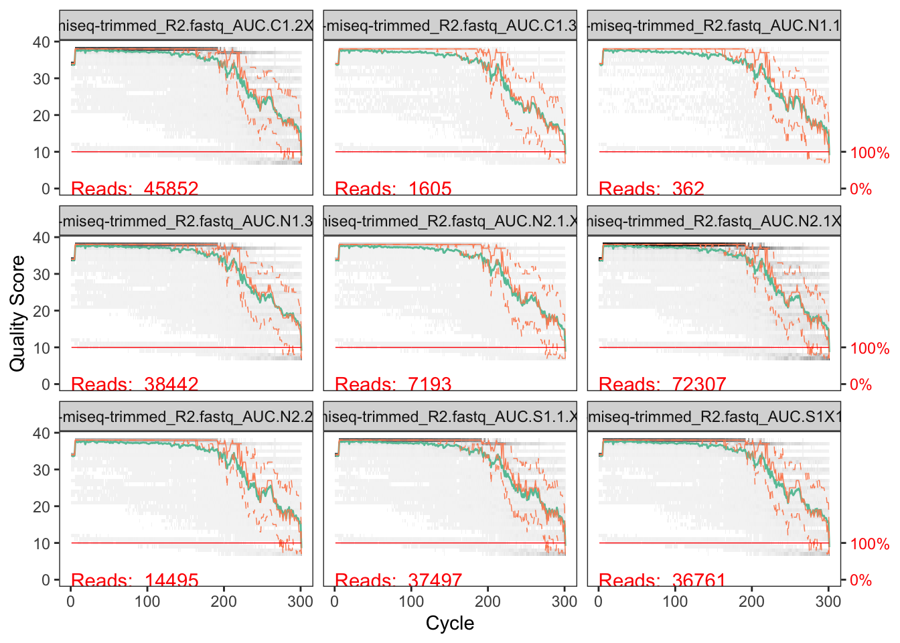
We can see that the quality is quite good, but around 200-220 nucleotides it begins to decrease. It’s not a sharp drop (a “crash”) but the median quality starts to decline around 200 nucleotides and dips below a median quality of around 20 by around 230-240 nucleotides.
Now let’s look at the reverse reads.
# Plot quality profile of reverse reads
plotQualityProfile(fnRs[1:9])Warning: Removed 188 rows containing missing values (`geom_tile()`).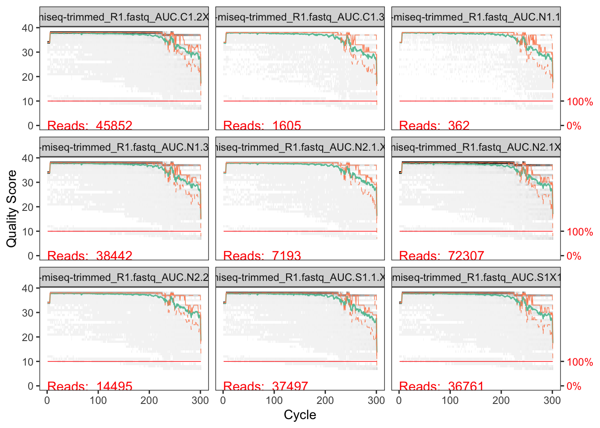
These are similar to the forward reads, but the quality stays high for longer. This is common (the R1 read tends to be of high quality than the R2). Here, the quality stays quite high almost all the way to the end of the read, although the median quality does begin to decline starting around 230-240 nucleotides.
Trimming and quality control
Now that we have visualized the quality of the reads, we need to make some decisions about where to trim the reads.
It is very important to trim barcode and primer nucleotides from the reads as they can cause problems when identifying ASVs. Our reads contain the 12 nucleotide barcode sequence at the beginning of each read that will need to be trimmed. In our case, we used the primers 799F and 1115R to amplify the bacterial 16S rRNA gene. These primers are 18 nucleotides (799F) and 16 nucleotides (1115R) in length, and are found after the barcode sequence at the beginning of each read. Sometimes FASTQ files will be supplied with the barcodes and/or primers already removed from the sequences; you will need to check or ask the sequencing centre about this for your own data. In our case we will need to remove the forward barcode + primer nucleotides (30 nucleotides) and the reverse barcode + primer nucleotides (28 nucleotides) from the beginning of each read.
We also need to trim the reads to remove low-quality nucleotides from the end of the reads. As we saw above, the quality of both the forward and reverse reads are quite good, but forward read quality did begin to decline around 200 nucleotides and reverse read quality declines slightly beginning around 230-240 nucleotides.
An important consideration when deciding where to trim our reads is that we want to be able to merge together the forward and reverse reads later in the pipeline. To do this, we need the reads to overlap with one another. To figure out whether our forward and reverse reads will overlap after trimming, we need to know the length of the amplicon that we sequenced. In our case, the 799F-1115R primers create an amplicon that is 316 nucleotides in length. Thus, we need to make sure that the total length of the forward and reverse reads that remains after trimming is longer than 316 nucleotides in order to have some overlapping nucleotides that can be used to merge the reads together. If the forward and reverse reads cannot be merged by overlap after trimming, it will not be possible to create a merged read that covers the full length of the amplicon. This is not a fatal problem but it can reduce accuracy of ASV binning (since we are missing data for a portion of the amplicon) and it makes taxonomic annotation more challenging. The overlapping portion of the reads also serves to increase confidence in the quality of ASVs, since for the overlapping portion we have two estimates of the nucleotide at each position which serves to reduce error and increase confidence in the base call at that position.
This is an important consideration when choosing what primers to use and what sequencing technology to use. You should aim to ensure that the total length of your forward and reverse reads is enough to cover the length of the region targeted by your primers, with as much overlap as possible to make merging the reads together easier. In our case, with an amplicon length of 312 nucleotides, and forward/reverse reads of around 300 nucleotides each, we will be sure to have lots of overlap, so we don’t have to worry too much if we need to trim our reads.
Now that we know the number of nucleotides to trim from the start and end of each sequence, we can now filter and trim our reads. Here, we will trim out barcode and primer nucleotides from the start of reads and low-quality nucleotides from the end of reads. We also filter out reads with low quality after trimming, as well as reads that contain N (unknown) nucleotides and reads that map to the phiX genome (a viral genome that is often added to sequencing runs to increase library quality).
This will create filtered versions of the FASTQ files in a new folder named dada2-filtered.
# set filtered file folder paths and filenames
filt_path <- file.path(getwd(), "dada2-filtered")
filtFs <- file.path(filt_path, paste0(sample.names, "_F_filt.fastq.gz"))
filtRs <- file.path(filt_path, paste0(sample.names, "_R_filt.fastq.gz"))
# Filter and trim reads
# multithread argument = number of cores to use (set TRUE to use all)
# note need to trim out primers at the start of the reads
# and trim the end of the reads when the quality crashes
out <- filterAndTrim(fnFs, filtFs, fnRs, filtRs, trimLeft = c(30,28),
truncLen=c(200,230), maxN=0, maxEE=2,
truncQ=2, rm.phix=TRUE, compress=TRUE,
multithread=TRUE, verbose=TRUE)Inferring ASVs
Now that we have our trimmed quality-control sequences, we can infer the identity and abundance of ASVs in our sequence files.
The first step of this process is to learn the error rates of our sequences. DADA2 uses information about error rates to infer the identity of ASVs in the samples.
# Learn error rates
errF <- learnErrors(filtFs, multithread=TRUE)103149200 total bases in 606760 reads from 32 samples will be used for learning the error rates.errR <- learnErrors(filtRs, multithread=TRUE)101062620 total bases in 500310 reads from 22 samples will be used for learning the error rates.Once we have learned the error rates, we do some bookkeeping to reduce the time required to infer ASVs by removing replicate sequences from each sample. A given FASTQ file might contain large numbers of identical sequences. We don’t need to analyse each of these sequences separately; we’ll dereplicate the file by removing duplicates of identical sequences. This keeps track of the number of duplicates so that at the end of our process we know the actual abundance of each of these identical sequences.
# Dereplicate the filtered fastq files
derepFs <- derepFastq(filtFs)
derepRs <- derepFastq(filtRs)
# Name the derep-class objects by the sample names
names(derepFs) <- sample.names
names(derepRs) <- sample.namesNow we are ready to use the DADA2 algorithm to identify ASVs in our samples. DADA2 uses a model of the error rate in sequences to identify the unique amplicon sequence variants (ASVs) that are present in our samples.
When carrying out ASV binning and chimera identification, we have the option to pool together samples (the pool argument). There are different strategies for pooling samples together. It is quicker to bin ASVs on a per-sample basis, but this might miss extremely rare ASVs that occur with low abundance in multiple samples. By pooling samples together, we can increase our ability to accurately identify these rare ASVs. The downside is that pooling samples together takes more time since we not have to analyse a larger number of sequences at the same time. The “pseudo-pooling” option strikes a balance between these options and is the approach we’ll use today. There is an in-depth explanation of the different pooling options at the DADA2 website.
# Infer the sequence variants in each sample
dadaFs <- dada(derepFs, err=errF, pool="pseudo", multithread=TRUE)Sample 1 - 43893 reads in 4133 unique sequences.
Sample 2 - 1535 reads in 279 unique sequences.
Sample 3 - 342 reads in 80 unique sequences.
Sample 4 - 36815 reads in 4992 unique sequences.
Sample 5 - 6901 reads in 796 unique sequences.
Sample 6 - 69130 reads in 6170 unique sequences.
Sample 7 - 13883 reads in 1640 unique sequences.
Sample 8 - 35769 reads in 2874 unique sequences.
Sample 9 - 35178 reads in 3504 unique sequences.
Sample 10 - 49487 reads in 5858 unique sequences.
Sample 11 - 15594 reads in 1607 unique sequences.
Sample 12 - 28849 reads in 2366 unique sequences.
Sample 13 - 529 reads in 110 unique sequences.
Sample 14 - 29475 reads in 2956 unique sequences.
Sample 15 - 22328 reads in 1714 unique sequences.
Sample 16 - 17615 reads in 2171 unique sequences.
Sample 17 - 24895 reads in 3116 unique sequences.
Sample 18 - 31171 reads in 2974 unique sequences.
Sample 19 - 11127 reads in 1205 unique sequences.
Sample 20 - 20 reads in 16 unique sequences.
Sample 21 - 255 reads in 57 unique sequences.
Sample 22 - 25519 reads in 2519 unique sequences.
Sample 23 - 7057 reads in 645 unique sequences.
Sample 24 - 29 reads in 11 unique sequences.
Sample 25 - 86 reads in 23 unique sequences.
Sample 26 - 11570 reads in 1413 unique sequences.
Sample 27 - 21806 reads in 2227 unique sequences.
Sample 28 - 8836 reads in 1092 unique sequences.
Sample 29 - 500 reads in 108 unique sequences.
Sample 30 - 19733 reads in 2783 unique sequences.
Sample 31 - 347 reads in 94 unique sequences.
Sample 32 - 36486 reads in 5477 unique sequences.
Sample 33 - 22106 reads in 2394 unique sequences.
Sample 34 - 24618 reads in 2881 unique sequences.
Sample 35 - 608 reads in 124 unique sequences.
Sample 36 - 25074 reads in 3998 unique sequences.
Sample 37 - 22197 reads in 2188 unique sequences.
selfConsist step 2dadaRs <- dada(derepRs, err=errR, pool="pseudo", multithread=TRUE)Sample 1 - 43893 reads in 3352 unique sequences.
Sample 2 - 1535 reads in 196 unique sequences.
Sample 3 - 342 reads in 71 unique sequences.
Sample 4 - 36815 reads in 4930 unique sequences.
Sample 5 - 6901 reads in 557 unique sequences.
Sample 6 - 69130 reads in 5237 unique sequences.
Sample 7 - 13883 reads in 1296 unique sequences.
Sample 8 - 35769 reads in 2357 unique sequences.
Sample 9 - 35178 reads in 2961 unique sequences.
Sample 10 - 49487 reads in 4856 unique sequences.
Sample 11 - 15594 reads in 1250 unique sequences.
Sample 12 - 28849 reads in 2007 unique sequences.
Sample 13 - 529 reads in 83 unique sequences.
Sample 14 - 29475 reads in 2315 unique sequences.
Sample 15 - 22328 reads in 1413 unique sequences.
Sample 16 - 17615 reads in 1728 unique sequences.
Sample 17 - 24895 reads in 2801 unique sequences.
Sample 18 - 31171 reads in 2593 unique sequences.
Sample 19 - 11127 reads in 1113 unique sequences.
Sample 20 - 20 reads in 16 unique sequences.
Sample 21 - 255 reads in 48 unique sequences.
Sample 22 - 25519 reads in 2316 unique sequences.
Sample 23 - 7057 reads in 571 unique sequences.
Sample 24 - 29 reads in 8 unique sequences.
Sample 25 - 86 reads in 18 unique sequences.
Sample 26 - 11570 reads in 1256 unique sequences.
Sample 27 - 21806 reads in 1916 unique sequences.
Sample 28 - 8836 reads in 1008 unique sequences.
Sample 29 - 500 reads in 96 unique sequences.
Sample 30 - 19733 reads in 2245 unique sequences.
Sample 31 - 347 reads in 87 unique sequences.
Sample 32 - 36486 reads in 5014 unique sequences.
Sample 33 - 22106 reads in 2037 unique sequences.
Sample 34 - 24618 reads in 2683 unique sequences.
Sample 35 - 608 reads in 83 unique sequences.
Sample 36 - 25074 reads in 3689 unique sequences.
Sample 37 - 22197 reads in 1876 unique sequences.
selfConsist step 2Merge denoised forward and reverse reads
Now that we have identified ASVs from our sequences, we can merge together the forward and reverse reads into a single sequence that will cover the full length of our amplicon. This approach works by looking for matching nucleotides in the overlapping portion of the forward and reverse reads.
As noted above, if your forward and reverse reads do not overlap, they cannot be merged. It is still possible to merge them by concatenating together the forward and reverse reads, but this approach makes it more difficult to do taxonomic annotation.
# Merge the denoised forward and reverse reads:
mergers <- mergePairs(dadaFs, derepFs, dadaRs, derepRs)Construct sequence table
We have identified ASVs and merged the forward and reverse reads into a single ASV. We can now construct the sequence table, which is a matrix of ASV abundances in each sample.
# construct sequence table
seqtab <- makeSequenceTable(mergers)
# look at dimension of sequence table (# samples, # ASVs)
dim(seqtab)[1] 37 2540# look at length of ASVs
table(nchar(getSequences(seqtab)))
295 296 297 298 299 300 301 302 303 304 305 306 307 308 312 318
12 113 73 99 82 458 264 697 484 109 140 1 5 1 1 1 Remove chimeras
The final step of processing the sequence files involves identifying and removing chimeric sequences. These are sequences that contain portions of two distinct organisms. Chimeric sequences can arise at different stages in the process of sequencing samples including during PCR and during sequencing.
# remove chimeras
seqtab.nochim <- removeBimeraDenovo(seqtab, method="consensus", multithread=TRUE, verbose=TRUE)Identified 1425 bimeras out of 2540 input sequences.# look at dimension of sequence table (# samples, # ASVs) after chimera removal
dim(seqtab.nochim)[1] 37 1115# what % of reads remain after chimera removal?
sum(seqtab.nochim)/sum(seqtab)[1] 0.9836811Tracking read fate through the pipeline
Now we have completed the processing of our files. We can track how many reads per sample remain after the different steps of the process.
# summary - track reads through the pipeline
getN <- function(x) sum(getUniques(x))
track <- cbind(out, sapply(dadaFs, getN), sapply(mergers, getN), rowSums(seqtab), rowSums(seqtab.nochim))
colnames(track) <- c("input", "filtered", "denoised", "merged", "tabled", "nonchim")
rownames(track) <- sample.names
head(track) input filtered denoised merged tabled nonchim
AUC.C1.2X1 45852 43893 43836 43297 43297 43268
AUC.C1.3 1605 1535 1535 1532 1532 1522
AUC.N1.1 362 342 332 324 324 324
AUC.N1.3 38442 36815 36731 35069 35069 33707
AUC.N2.1.X1 7193 6901 6899 6857 6857 6854
AUC.N2.1X2 72307 69130 69116 68251 68251 68226Taxonomic annotation
Now we will annotate the taxonomic identity of each ASV by comparing its sequence with a reference database. Our data are bacterial 16S rRNA sequences so we’ll use the SILVA database for this taxonomic annotation. A version of the SILVA database formatted for use with DADA2 is available at the DADA2 website, along with other databases for different barcode genes.
Higher-level taxonomic annotation
For taxonomic annotation at ranks from domains to genera, DADA2 uses the RDP Naive Bayesian Classifier algorithm. This algorithm compares each ASV sequence to the reference database. If the bootstrap confidence in the taxonomic annotation at each rank is 50% or greater, we assign that annotation to the ASV at that rank. If an ASV cannot be confidently identified at a given rank, there will be a NA value in the taxonomy table.
Note that this step can be time consuming, especially if you have a large number of ASVs to identify. Running this annotation step on a computer with numerous cores/threads will speed up the process.
# identify taxonomy
taxa <- assignTaxonomy(seqtab.nochim, "SILVA138.1/silva_nr99_v138.1_train_set.fa.gz", multithread=TRUE, tryRC=TRUE)Species-level taxonomic annotation
We use the RDP Naive Bayesian Classifier algorithm for taxonomic annotations at ranks from domains to genera. This allows for annotations even if there is not an exact match between ASV sequences and sequences in the reference database. At the species level, we need a different strategy, since we do not want to identify an ASV as belonging to a species unless its sequence matches that species exactly. Note that this approach means that we cannot carry out species-level taxonomic annotation if we concatenated our sequences rather than merging them together into a single sequence.
This step can also be somewhat time consuming depending on the number of ASVs to be annotated.
# exact species matching (won't work if concatenating sequences)
taxa.sp <- addSpecies(taxa, "SILVA138.1/silva_species_assignment_v138.1.fa.gz", allowMultiple = TRUE, tryRC = TRUE)Now that we have the taxonomic annotations, we can inspect them. We create a special version of the taxonomy table with the ASV names removed (the name of each ASV is its full sequence, so the names are very long).
# inspect the taxonomic assignments
taxa.print <- taxa.sp # Removing sequence rownames for display only
rownames(taxa.print) <- NULL
head(taxa.print, n=20) Kingdom Phylum Class Order
[1,] "Bacteria" "Proteobacteria" "Alphaproteobacteria" "Rhizobiales"
[2,] "Bacteria" "Cyanobacteria" "Cyanobacteriia" "Chloroplast"
[3,] "Bacteria" "Bacteroidota" "Bacteroidia" "Cytophagales"
[4,] "Bacteria" "Proteobacteria" "Alphaproteobacteria" "Sphingomonadales"
[5,] "Bacteria" "Proteobacteria" "Alphaproteobacteria" "Sphingomonadales"
[6,] "Bacteria" "Proteobacteria" "Alphaproteobacteria" "Rhizobiales"
[7,] "Bacteria" "Actinobacteriota" "Actinobacteria" "Micrococcales"
[8,] "Bacteria" "Proteobacteria" "Alphaproteobacteria" "Sphingomonadales"
[9,] "Bacteria" "Actinobacteriota" "Actinobacteria" "Micrococcales"
[10,] "Bacteria" "Proteobacteria" "Alphaproteobacteria" "Rhizobiales"
[11,] "Bacteria" "Proteobacteria" "Alphaproteobacteria" "Rhizobiales"
[12,] "Bacteria" "Proteobacteria" "Alphaproteobacteria" "Rhizobiales"
[13,] "Bacteria" "Proteobacteria" "Alphaproteobacteria" "Rhizobiales"
[14,] "Bacteria" "Proteobacteria" "Alphaproteobacteria" "Sphingomonadales"
[15,] "Bacteria" "Proteobacteria" "Alphaproteobacteria" "Sphingomonadales"
[16,] "Bacteria" "Proteobacteria" "Alphaproteobacteria" "Sphingomonadales"
[17,] "Bacteria" "Proteobacteria" "Gammaproteobacteria" "Burkholderiales"
[18,] "Bacteria" "Proteobacteria" "Gammaproteobacteria" "Burkholderiales"
[19,] "Bacteria" "Proteobacteria" "Alphaproteobacteria" "Sphingomonadales"
[20,] "Bacteria" "Proteobacteria" "Alphaproteobacteria" "Rhizobiales"
Family Genus
[1,] "Beijerinckiaceae" "Methylobacterium-Methylorubrum"
[2,] NA NA
[3,] "Hymenobacteraceae" "Hymenobacter"
[4,] "Sphingomonadaceae" "Sphingomonas"
[5,] "Sphingomonadaceae" "Sphingomonas"
[6,] "Beijerinckiaceae" "Methylobacterium-Methylorubrum"
[7,] "Microbacteriaceae" "Amnibacterium"
[8,] "Sphingomonadaceae" "Sphingomonas"
[9,] "Microbacteriaceae" "Frondihabitans"
[10,] "Beijerinckiaceae" "Methylobacterium-Methylorubrum"
[11,] "Beijerinckiaceae" "Methylobacterium-Methylorubrum"
[12,] "Beijerinckiaceae" "1174-901-12"
[13,] "Beijerinckiaceae" "Methylobacterium-Methylorubrum"
[14,] "Sphingomonadaceae" "Sphingomonas"
[15,] "Sphingomonadaceae" "Sphingomonas"
[16,] "Sphingomonadaceae" "Sphingomonas"
[17,] "Oxalobacteraceae" "Massilia"
[18,] "Oxalobacteraceae" "Massilia"
[19,] "Sphingomonadaceae" "Sphingomonas"
[20,] "Beijerinckiaceae" "Methylobacterium-Methylorubrum"
Species
[1,] NA
[2,] NA
[3,] "arcticus/bucti/perfusus"
[4,] "aerolata/faeni"
[5,] NA
[6,] NA
[7,] NA
[8,] "ginsenosidivorax"
[9,] "australicus/cladoniiphilus/peucedani/sucicola"
[10,] NA
[11,] NA
[12,] NA
[13,] NA
[14,] "faeni"
[15,] "echinoides/glacialis/mucosissima/rhizogenes"
[16,] NA
[17,] NA
[18,] "aurea/oculi"
[19,] NA
[20,] NA Final steps - clean up and save data objects and workspace
We have now completed our analysis of the sequence files. We have created an ASV table seqtab.nochim that contains the error-corrected non-chimeric ASV sequences and their abundances in each sample. For each ASV we also have the taxonomic annotations of the ASV in the object taxa.sp. We will save these data objects to the file system, along with a copy of the entire workspace containing all the output of the analyses so far. We will use these files to continue our analyses in the next part of the workshop.
## Save sequence table and taxonomic annotations to individual files
saveRDS(seqtab.nochim, "seqtab.nochim.rds")
saveRDS(taxa.sp, "taxa.sp.rds")
## Save entire R workspace to file
save.image("Microbiome-sequence-analysis-workspace.RData")6 Data normalization and ecological analysis of microbiome data
In this workshop, we will use the output of a DADA2 analysis of raw sequence data to explore the importance of different factors that influence the diversity and composition of microbial communities on leaves.
About the data set
In this workshop, we will be analyzing the bacterial communities found on leaves of sugar maple seedlings of different provenances planted at sites across eastern North America.
These data are taken from the article:
De Bellis, Laforest-Lapointe, Solarik, Gravel, and Kembel. 2022. Regional variation drives differences in microbial communities associated with sugar maple across a latitudinal range. Ecology (published online ahead of print). doi:10.1002/ecy.3727
For this workshop, we will work with a subset of samples from six of the nine sites sampled for the article. These samples are located in three different biomes (temperate, mixed, and boreal forests). At each site, several sugar maple seedlings were planted and harvested, and we collected bacterial DNA from the leaves. Each sample thus represents the bacterial communities on the leaves of a single sugar maple seedling. For each seedling, we have associated metadata on the provenance of the seed, the site where the seed was planted, and the biome/stand type where the seed was planted.
Install and load required packages and data
For this part of the workshop we will need to install several R packages. The commands below should work to install these packages, you should make sure you have the latest version of R installed (version 4.2.0 at the time of writing this document).
# install packages from CRAN
install.packages(pkgs = c("Rcpp", "RcppArmadillo", "picante", "ggpubr", "pheatmap"), dependencies = TRUE)
# install packages from Bioconductor
if (!require("BiocManager", quietly = TRUE))
install.packages("BiocManager")
BiocManager::install("dada2", version = "3.15", update = FALSE)
# if the dada2 install returns a warning for BiocParallel, install from binary using this command:
# BiocManager::install("BiocParallel", version = "3.15", type="binary", update = FALSE)
BiocManager::install("DESeq2")
BiocManager::install("phyloseq")
BiocManager::install("ANCOMBC")To begin, we will load the required packages.
### load packages
library(picante)
library(vegan)
library(ggplot2)
library(reshape2)
library(ggpubr)
library(DESeq2)
library(pheatmap)
library(ANCOMBC)
library(phyloseq)Load DADA2 results
We will continue our analyses picking up where we left off at the end of day 1 of the workshop. We used the DADA2 package to identify ASVs and their abundances in samples, and to annotate ASVs taxonomically by comparing them to the SILVA rRNA database. We saved these data objects as files. You will need to place a copy of the files “seqtab.nochim.rds” and “taxa.sp.rds” in the working directory, and then we load them into our R workspace.
# load sequence table (nonchimeric ASV abundances in samples)
seqtab.nochim <- readRDS("seqtab.nochim.rds")
# load taxonomic annotations (taxonomic ID of each ASV)
taxa.sp <- readRDS("taxa.sp.rds")Load metadata
The metadata file we will use for this workshop is available for download at the following URL: https://figshare.com/articles/dataset/Data_files_for_BIOS2_Microbiome_Analysis_Workshop/19763077.
You will need to download the file “metadata-Qleaf_BACT.csv” and place a copy of this file in the working directory. Then we can load the metadata.
# load metadata
metadata <- read.csv("metadata-Qleaf_BACT.csv", row.names = 1)
# inspect metadata
head(metadata) Description SampleType StandType TransplantedSite
ASH.S2.2 ASH.S2.2 Leaf.Bacteria Boreal Ashuapmushuan
ASH.N1.1.X1 ASH.N1.1.X1 Leaf.Bacteria Boreal Ashuapmushuan
ASH.N1.1.X3 ASH.N1.1.X3 Leaf.Bacteria Boreal Ashuapmushuan
ASH.N1.1X3 ASH.N1.1X3 Leaf.Bacteria Boreal Ashuapmushuan
ASH.C1.1 ASH.C1.1 Leaf.Bacteria Boreal Ashuapmushuan
ASH.C1.2 ASH.C1.2 Leaf.Bacteria Boreal Ashuapmushuan
SeedSourceRegion SeedSourceOrigin TransplantedSiteLat
ASH.S2.2 South Kentucky 48.81
ASH.N1.1.X1 North Montmagny 48.81
ASH.N1.1.X3 North Montmagny 48.81
ASH.N1.1X3 North Montmagny 48.81
ASH.C1.1 Central Pennsylvania 48.81
ASH.C1.2 Central Pennsylvania 48.81
TransplantedSiteLon SeedSourceOriginLat SeedSourceOriginLon
ASH.S2.2 -72.77 38.26 -84.95
ASH.N1.1.X1 -72.77 46.95 -70.46
ASH.N1.1.X3 -72.77 46.95 -70.46
ASH.N1.1X3 -72.77 46.95 -70.46
ASH.C1.1 -72.77 41.13 -77.62
ASH.C1.2 -72.77 41.13 -77.62The metadata contains information about each sample, including the following columns:
- Description: the name of the sample (these match the names used on the sequence files)
- SampleType: the samples we are working with are all leaf bacteria (we collected other types of data in the original study, but here we focus just on leaf bacteria)
- StandType: the stand/biome type of the site where the seedling were planted. Either boreal, mixed, or temperate forest.
- TransplantedSite: the site where the seedling was planted
- SeedSourceRegion: the region from which the seed was collected
- SeedSourceOrigin: the site from which the seed was collected
- TransplantedSiteLat and TransplantedSiteLon: the latitude and longitude of the site where the seedling was transplanted
Cleaning and summarizing DADA2 results
Our first steps will be to do some cleaning up of the DADA2 results to make it easier to work with them. We create community and taxonomy objects that we will work with.
# community object from nonchimeric ASV sequence table
comm <- seqtab.nochim
# taxonomy object - make sure order of ASVs match between community and taxonomy
taxo <- taxa.sp[colnames(comm),]
# keep metadata only for community samples
metadata <- metadata[rownames(comm),]We will also rename the ASVs in our community and taxonomy data objects. By default, ASVs are named by their full sequence. This makes it hard to look at these objects since the names are too long to display easily. We will replace the names of ASVs by “ASV_XXX” where XXX is a number from 1 to the number of observed ASVs.
# ASV names are their full sequences by default
# This makes it very hard to look at them (the names are too long)
# Store ASV sequence information and rename ASVs as "ASV_XXX"
ASV.sequence.info <- data.frame(ASV.name=paste0('ASV_',1:dim(comm)[2]),
ASV.sequence=colnames(comm))
colnames(comm) <- ASV.sequence.info$ASV.name
rownames(taxo) <- ASV.sequence.info$ASV.nameExploring community data
Now we can begin to look at our data in more depth.
# community - number of samples (rows) and ASVs (columns)
dim(comm)[1] 37 1115We have 37 samples and 1115 ASVs. If we look at our data objects, we can see the type of data in each of the different objects.
# look at community data object
head(comm)[,1:6] ASV_1 ASV_2 ASV_3 ASV_4 ASV_5 ASV_6
AUC.C1.2X1 10335 158 3993 4092 584 3225
AUC.C1.3 123 98 15 0 3 3
AUC.N1.1 84 17 16 5 0 3
AUC.N1.3 4738 113 628 3978 0 329
AUC.N2.1.X1 1871 1853 1431 20 58 2
AUC.N2.1X2 19648 4200 6465 191 7221 2054# look at taxonomy object
head(taxo) Kingdom Phylum Class Order
ASV_1 "Bacteria" "Proteobacteria" "Alphaproteobacteria" "Rhizobiales"
ASV_2 "Bacteria" "Cyanobacteria" "Cyanobacteriia" "Chloroplast"
ASV_3 "Bacteria" "Bacteroidota" "Bacteroidia" "Cytophagales"
ASV_4 "Bacteria" "Proteobacteria" "Alphaproteobacteria" "Sphingomonadales"
ASV_5 "Bacteria" "Proteobacteria" "Alphaproteobacteria" "Sphingomonadales"
ASV_6 "Bacteria" "Proteobacteria" "Alphaproteobacteria" "Rhizobiales"
Family Genus
ASV_1 "Beijerinckiaceae" "Methylobacterium-Methylorubrum"
ASV_2 NA NA
ASV_3 "Hymenobacteraceae" "Hymenobacter"
ASV_4 "Sphingomonadaceae" "Sphingomonas"
ASV_5 "Sphingomonadaceae" "Sphingomonas"
ASV_6 "Beijerinckiaceae" "Methylobacterium-Methylorubrum"
Species
ASV_1 NA
ASV_2 NA
ASV_3 "arcticus/bucti/perfusus"
ASV_4 "aerolata/faeni"
ASV_5 NA
ASV_6 NA # look at metadata object
head(metadata) Description SampleType StandType TransplantedSite
AUC.C1.2X1 AUC.C1.2X1 Leaf.Bacteria Mixed Auclair
AUC.C1.3 AUC.C1.3 Leaf.Bacteria Mixed Auclair
AUC.N1.1 AUC.N1.1 Leaf.Bacteria Mixed Auclair
AUC.N1.3 AUC.N1.3 Leaf.Bacteria Mixed Auclair
AUC.N2.1.X1 AUC.N2.1.X1 Leaf.Bacteria Mixed Auclair
AUC.N2.1X2 AUC.N2.1X2 Leaf.Bacteria Mixed Auclair
SeedSourceRegion SeedSourceOrigin TransplantedSiteLat
AUC.C1.2X1 Central Pennsylvania 47.75
AUC.C1.3 Central Pennsylvania 47.75
AUC.N1.1 North Montmagny 47.75
AUC.N1.3 North Montmagny 47.75
AUC.N2.1.X1 North Rivere-du-Loup 47.75
AUC.N2.1X2 North Rivere-du-Loup 47.75
TransplantedSiteLon SeedSourceOriginLat SeedSourceOriginLon
AUC.C1.2X1 -68.08 41.13 -77.62
AUC.C1.3 -68.08 41.13 -77.62
AUC.N1.1 -68.08 46.95 -70.46
AUC.N1.3 -68.08 46.95 -70.46
AUC.N2.1.X1 -68.08 47.73 -69.48
AUC.N2.1X2 -68.08 47.73 -69.48Subset community to remove host DNA
Before proceeding we need to remove host DNA and other contaminants and low-quality sequences. We should do this before rarefaction and subsetting samples since it could change the number of sequences per sample if there is a lot of non-target DNA. We will carry this step out first so that subsequent analyses don’t include these non-bacterial ASVs in any of the analyses.
A reminder that primer choice and the habitat you are studying will have a big effect on the amount of non-target DNA that is in your samples. Many commonly used primers (for example, the widely used Earth Microbiome Project 16S rRNA primers 515F–806R which target the V4 region of the 16S gene) will amplify not only free living bacteria, but also DNA from host cells including chloroplasts and mitochondria. If you are working with host-associated microbiomes you may want to consider using a different primer that will not amplify host DNA. For example, when quantifying plant-associated microbiomes we commonly use the 16S primer 799F-1115R which targets the V5 region of the 16S gene and does not amplify chloroplasts or mitochondria.
Because we used the 799F-1115R primers for this study, we do not expect to find much host DNA, but we should check anyways, since a few host DNA sequences might have been amplified anyways. This is a very important step of the data analysis process since host DNA is not part of the microbial community and should not be included in data analyses. Otherwise, the amount of host DNA in a sample will lead to changes in the abundance of ASVs that are not actually part of the bacterial community being targeted.
When using a primer that targets bacteria, host DNA and DNA of non-target organisms in the samples will typically show up ASVs annotated as belonging to a non-Bacteria domain (Archaea or Eukaryota), or the taxonomic order is “Chloroplast”, or the taxonomic family is “Mitochondria”.
First we check whether any of our sequence are classified into a domain other than the bacteria.
# How many ASVs are classified to different domains?
table(taxo[,"Kingdom"])
Bacteria
1115 All of the ASVs are classified as belonging to the domain Bacteria. Now let’s check for chloroplasts and mitochondria.
# How many ASVs are classified as Chloroplasts?
table(taxo[,"Order"])["Chloroplast"]Chloroplast
12 # How many ASVs are classified as Mitochondria?
table(taxo[,"Family"])["Mitochondria"]Mitochondria
2 There are only a few ASVs classified as chloroplasts and mitochondria. This is expected since we used a primer that should exclude this host DNA. We will remove these ASVs before continuing our analyses.
# Remove chloroplast and mitochondria ASVs from taxonomy table
taxo <- subset(taxo, taxo[,"Order"]!="Chloroplast" & taxo[,"Family"]!="Mitochondria")
# Remove these ASVs from the community matrix as well
comm <- comm[,rownames(taxo)]If you find a large number of ASVs classified as non-Bacteria, or as chloroplasts or mitochondria, you will need to remove them from your data set prior to further analysis. Sometimes this can mean that many of your samples will contain few sequences after removing the host DNA and non-bacterial ASVs. If this is the case, you can consider using a primer that will not amplify host DNA, or sequencing your samples more deeply so that enough bacterial DNA will remain after removing the host DNA. However, this latter approach will waste a lot of your sequences, and in some cases if your samples contain mostly host DNA it will be difficult to obtain enough bacterial sequences to carry out ecological analyses.
Summary statistics
To begin with, we can calculate summary statistics for our community and taxonomy data. We mentioned earlier that the number of sequences per sample (library size) is normalized, meaning we aimed to sequence approximately the same number of reads per sample.
# number of reads per sample
rowSums(comm) AUC.C1.2X1 AUC.C1.3 AUC.N1.1 AUC.N1.3 AUC.N2.1.X1 AUC.N2.1X2
43110 1305 307 33424 4966 63971
AUC.N2.2 AUC.S1.1.X2 AUC.S1X1 AUC.S2.2 BC.C1.2 BC.C2.1X1
13344 19407 33599 45548 8670 25333
BC.C2.3X2 BC.C2.3X2b BC.N1.3X2 BC.N1 BC.N2.1.X3 BC.N2.1X1
271 24140 7507 15009 22164 20475
BC.N2.1X2 PAR.C1.1 PAR.C1.2 PAR.C2.3 PAR.N1.3 QLbactNeg19
10486 13 161 23407 6927 27
QLbactNeg20 S.M.C1.3X2 S.M.C2.3 S.M.C2.3X2 S.M.S1.1X1 SF.C1.3
84 10137 20858 8403 485 19081
SF.C2.2 SF.N2.3 SF.S1.3 T2.C1.1 T2.C2.3 T2.N1.1
273 31314 19664 23534 602 20712
T2.S2.1
21663 # visualize log10 number of reads per sample
hist(log10(rowSums(comm)))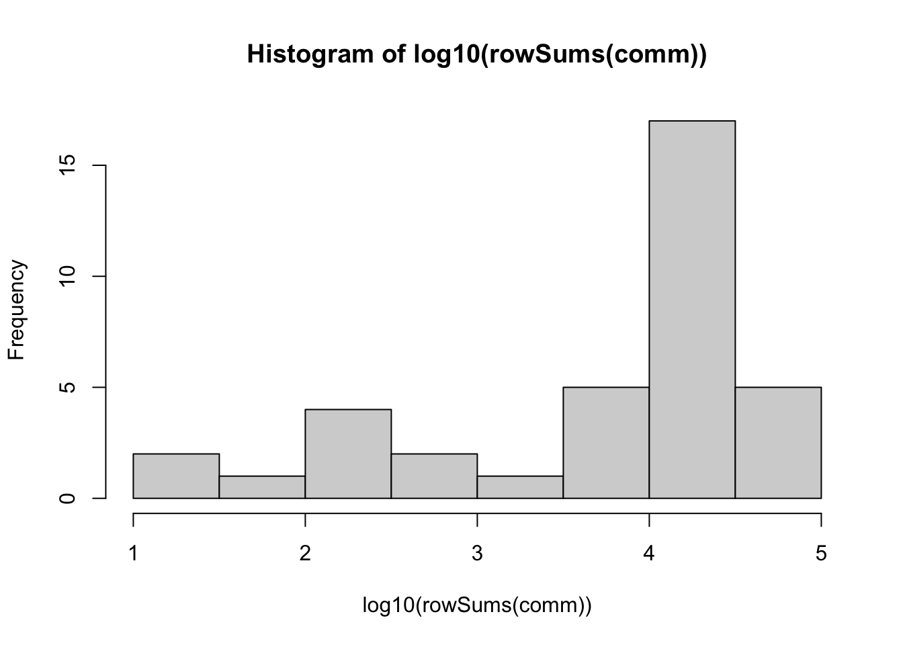
We can see that most samples have at least 4000-10000 sequences/sample. But there are some samples with fewer reads. This includes both the negative control samples as well as some of the ‘real’ samples. We will need to remove samples with too few reads - we’ll return to this shortly.
We can also look at the number of sequences per ASV.
# log10 of number of reads per ASV
hist(log10(colSums(comm)))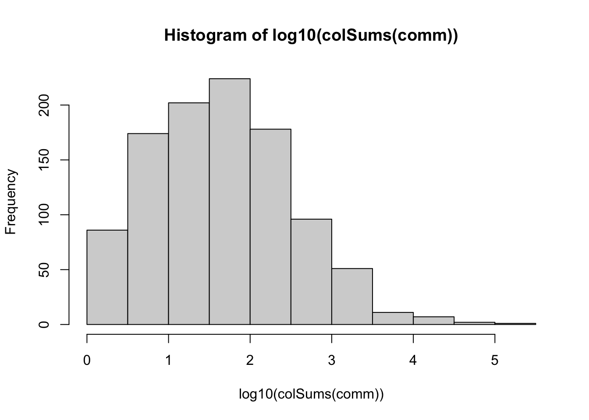
We can see that ASV abundances follow a roughly lognormal distribution, meaning that there are a few highly abundant ASVs, but most ASVs are rare. Most ASVs are represented by fewer than 100 sequences (10^2).
Remove negative controls and samples with low-quality data
One of the first steps of analysing ASV data sets is to remove control samples, as well as samples with too few sequences. We will also need to normalize our data to take into account the fact that samples differ in the number of sequences they contain.
Rarefaction curves
We will visualize the relationship between the number of sequences in each sample (“sample size” in the figures below) versus the number of ASVs they contain (“species” in the figures below). These rarefaction curves make it clear why we need to take the number of sequences per sample into account when we analyse sample diversity.
First we plot a rarefaction curve for all samples. Each curve shows how the number of ASVs per sample changes with number of sequences in a particular sample.
rarecurve(comm, step=200, label=TRUE)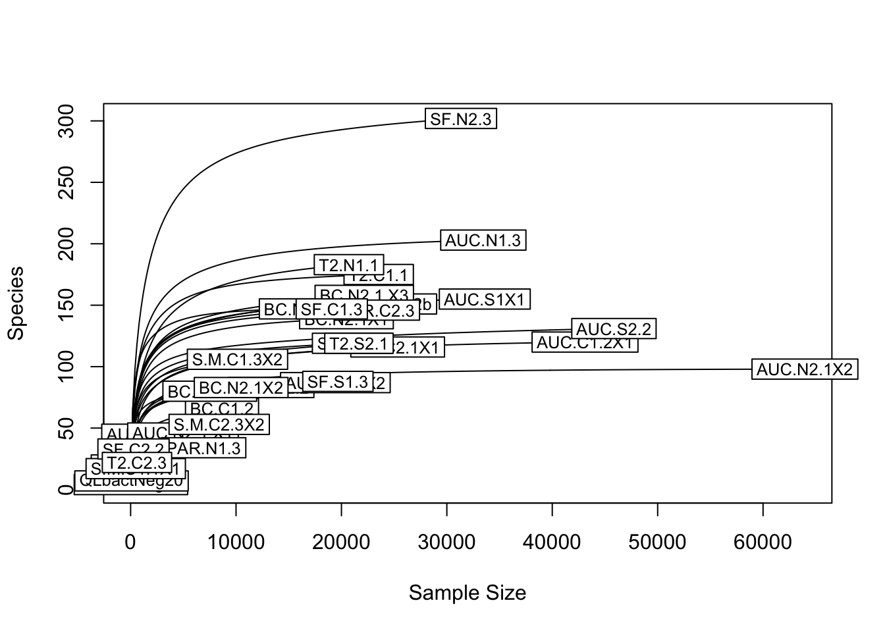
For these rarefaction curves, the key thing to look for is where ASV richness (number of ASVs per sample) reaches a plateau relative to the number of reads per sample. It does look like the samples we can see have reached a plateau of ASV richness. But it’s hard to see the curve for many of the samples because of the x-axis limits - a few samples with a lot of sequences make it hard to see the less diverse samples. Let’s zoom in to look just at the range from 0 to 5000 sequences/sample.
rarecurve(comm, step=200, label=TRUE, xlim=c(0,5000))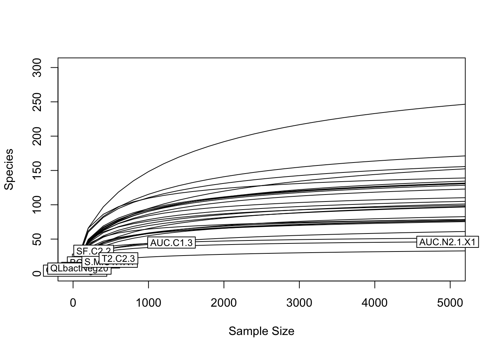
Now we can see that the vast majority of samples reach a plateau in their ASV richness by around 3000-5000 sequences/sample. There are a few samples with very low numbers of both sequences and ASVs. We will now look at the composition of the communities in these different samples.
Visualize community composition
Another way to quickly visualize the composition of all of our samples is to do an ordination to visualize similarity in composition among samples. Here we will visualize a principal components analysis on Hellinger-transformed ASV abundance data. Normally we should normalize the data before doing any diversity analysis but here we just want a quick look at whether some samples have very different composition from the rest. We do a PCA analysis and then plot the ordination results, overlaying confidence ellipses around the samples from the different transplanted stand types/biomes.
# PCA on Hellinger-transformed community data
comm.pca <- prcomp(decostand(comm,"hellinger"))
# plot ordination results
ordiplot(comm.pca, display="sites", type="text",cex=0.5)
ordiellipse(comm.pca, metadata$StandType, label=TRUE,cex=0.8)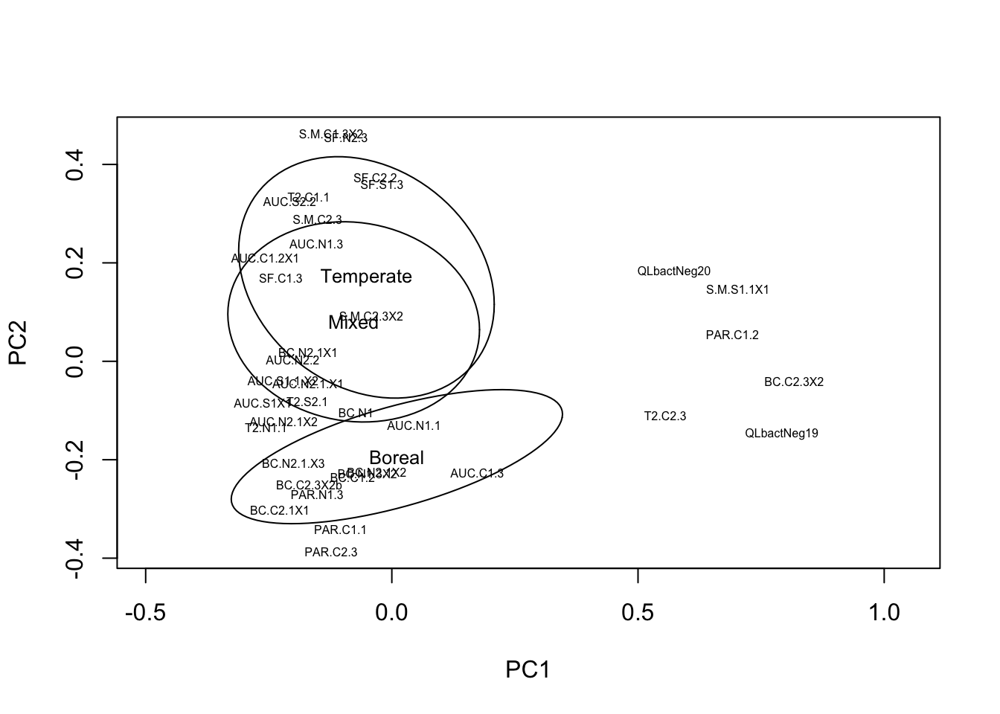
There are two things to note in this ordination figure. First, we can see that along the first axis there is a separation between the negative control samples and a few other samples that cluster with the negative controls, versus all the other samples. Second, we can see that the composition of the communities seems to differ among stand type/biome along the second axis, varying from boreal to mixed to temperate forests. We’ll return to this observation later, but for now the important thing is that we can see that there are some samples that are more similar to the negative control samples than they are to the other ‘real’ samples. Let’s visualize the number of sequences per sample (library size) mapped onto these ordination axes.
# Surface plot - plot number of sequences/sample (library size)
ordisurf(comm.pca, rowSums(comm), bubble=TRUE, cex=2,
main="Library size (sequences/sample)")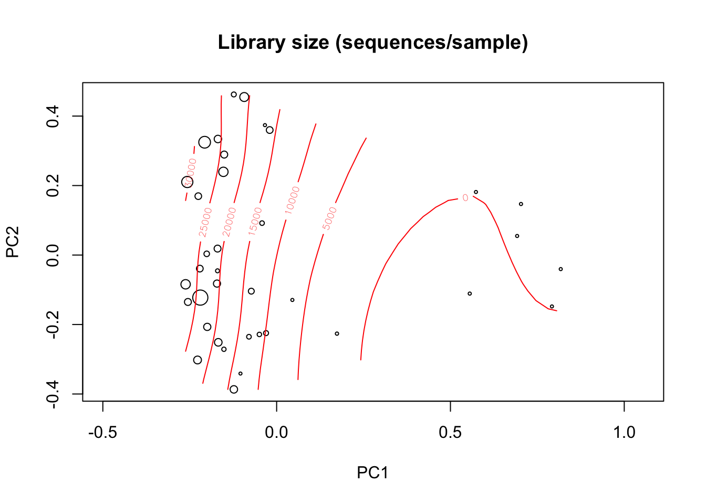
We can see that the common characteristic of the samples that cluster on the right side of the ordination plot, next to the negative control samples, is that these samples contain very few sequences.
There are several reasons why some samples contain few sequences, but in general this is an indication that these samples contain data of low quality and should be excluded from further analysis. This can be caused by low microbial biomass in the original samples, with some problem with the extraction or amplification of microbial DNA in these samples, or simply by chance. Regardless, the fact that the composition of the microbial communities in these samples is more similar to the negative controls than to the other ‘real’ samples means we need to get rid of these samples.
If many of your samples contain few sequences, this could indicate some problem with the protocol being used for sample processing and sequencing, or the normalization step of library preparation. It could also indicate low microbial biomass. In the data we are analysing here, I suspect that the problem with these samples was low microbial biomass. The maple seedlings from which we extracted microbial DNA were sometimes small with only 1-2 tiny leaves, which doesn’t contain enough bacterial cells to reliably extract and sequence their DNA. When microbial biomass in a sample is small, the potential importance of contaminant DNA increases. Regardless of the cause, we will have to exclude these samples.
Deciding what number of sequences to use as a cutoff when getting rid of samples with a low number of sequences will depend on the nature of your data set and your biological questions. You should always aim to ensure that you have enough reads per sample to reach a plateau in the rarefaction curve. Beyond that, you may want set a cutoff for a minimum number of reads per sample that ensures that you keep enough samples to have sufficient replicates in your different treatments.
Check negative controls
We sequenced negative controls in this study to ensure that our samples were not contaminated and that the sequences we obtained come from bacteria on leaves and not from some other step of the sample processing such as from the DNA extraction kits or during PCR. As we saw above, the inclusion of these negative control samples is useful because we can look at their composition to identify ‘real’ samples that might contain contaminants. As a final step, let’s look at the negative control samples to see what ASVs they contain.
# Abundance of ASVs in negative controls
comm['QLbactNeg19',][comm['QLbactNeg19',]>0] ASV_1 ASV_44 ASV_77 ASV_138
1 11 11 4 comm['QLbactNeg20',][comm['QLbactNeg20',]>0] ASV_8 ASV_30 ASV_77 ASV_91 ASV_418 ASV_625 ASV_1002
1 1 2 1 72 3 4 Our negative controls look clean - they contain only a few sequences (fewer than 100) belonging to a small number of ASVs. This is the type of result we are looking for, and we will remove these negative controls shortly when we remove low quality samples with small numbers of sequences. We can also look at the taxonomic identity of the ASVs that are present in the negative controls.
# Taxonomic identity of ASVs present in negative controls
taxo[names(comm['QLbactNeg19',][comm['QLbactNeg19',]>0]),] Kingdom Phylum Class Order
ASV_1 "Bacteria" "Proteobacteria" "Alphaproteobacteria" "Rhizobiales"
ASV_44 "Bacteria" "Proteobacteria" "Gammaproteobacteria" "Enterobacterales"
ASV_77 "Bacteria" "Firmicutes" "Bacilli" "Lactobacillales"
ASV_138 "Bacteria" "Proteobacteria" "Gammaproteobacteria" "Enterobacterales"
Family Genus
ASV_1 "Beijerinckiaceae" "Methylobacterium-Methylorubrum"
ASV_44 "Shewanellaceae" "Shewanella"
ASV_77 "Streptococcaceae" "Streptococcus"
ASV_138 "Shewanellaceae" "Shewanella"
Species
ASV_1 NA
ASV_44 "algae/haliotis"
ASV_77 "cristatus/gordonii/ictaluri/mitis/porcorum/sanguinis"
ASV_138 NA taxo[names(comm['QLbactNeg20',][comm['QLbactNeg20',]>0]),] Kingdom Phylum Class Order
ASV_8 "Bacteria" "Proteobacteria" "Alphaproteobacteria" "Sphingomonadales"
ASV_30 "Bacteria" "Bacteroidota" "Bacteroidia" "Cytophagales"
ASV_77 "Bacteria" "Firmicutes" "Bacilli" "Lactobacillales"
ASV_91 "Bacteria" "Proteobacteria" "Alphaproteobacteria" "Acetobacterales"
ASV_418 "Bacteria" "Proteobacteria" "Gammaproteobacteria" "Xanthomonadales"
ASV_625 "Bacteria" "Firmicutes" "Bacilli" "Lactobacillales"
ASV_1002 "Bacteria" "Firmicutes" "Bacilli" "Staphylococcales"
Family Genus
ASV_8 "Sphingomonadaceae" "Sphingomonas"
ASV_30 "Hymenobacteraceae" "Hymenobacter"
ASV_77 "Streptococcaceae" "Streptococcus"
ASV_91 "Acetobacteraceae" "Roseomonas"
ASV_418 "Rhodanobacteraceae" "Fulvimonas"
ASV_625 "Streptococcaceae" "Streptococcus"
ASV_1002 "Staphylococcaceae" "Staphylococcus"
Species
ASV_8 "ginsenosidivorax"
ASV_30 NA
ASV_77 "cristatus/gordonii/ictaluri/mitis/porcorum/sanguinis"
ASV_91 NA
ASV_418 NA
ASV_625 "anginosus/mitis/oralis/pneumoniae/pseudopneumoniae"
ASV_1002 "aureus/capitis/caprae/epidermidis/haemolyticus/saccharolyticus/saprophyticus/warneri"Subset community to remove low sequence number samples
Now that we have done some exploratory data analyses, we will take a subset of our communities remove the negative controls as well as samples with a low number of sequences.
When we looked at the rarefaction curves, it looked like most samples reached a plateau in number of ASVs per sequence by around 3000-5000 sequences/sample. When we looked at the distribution of number of sequences per sample, we saw that most samples contained at least 4000-5000 sequences. The samples that had fewer than that number of sequences were the ones that clustered with the negative control samples to the right of the ordination figure. Thus, we will set a cutoff of 4000 sequences per sample as a minimum to include a sample in further analysis. This will remove both the negative control samples and the samples of questionable quality that contained very few sequences.
# what is the dimension of the full community data set
dim(comm)[1] 37 1027# take subset of communities with at least 4000 sequences
comm.sub <- comm[rowSums(comm)>=4000,]
# also take subset of ASVs present in the remaining samples
comm.sub <- comm.sub[,apply(comm.sub,2,sum)>0]
# what is the dimension of the subset community data set?
dim(comm.sub)[1] 27 1008# subset metadata and taxonomy to match
metadata.sub <- metadata[rownames(comm.sub),]
taxo.sub <- taxo[colnames(comm.sub),]
# descriptive stats for samples and ASVs
# number of sequences per sample
hist(rowSums(comm.sub))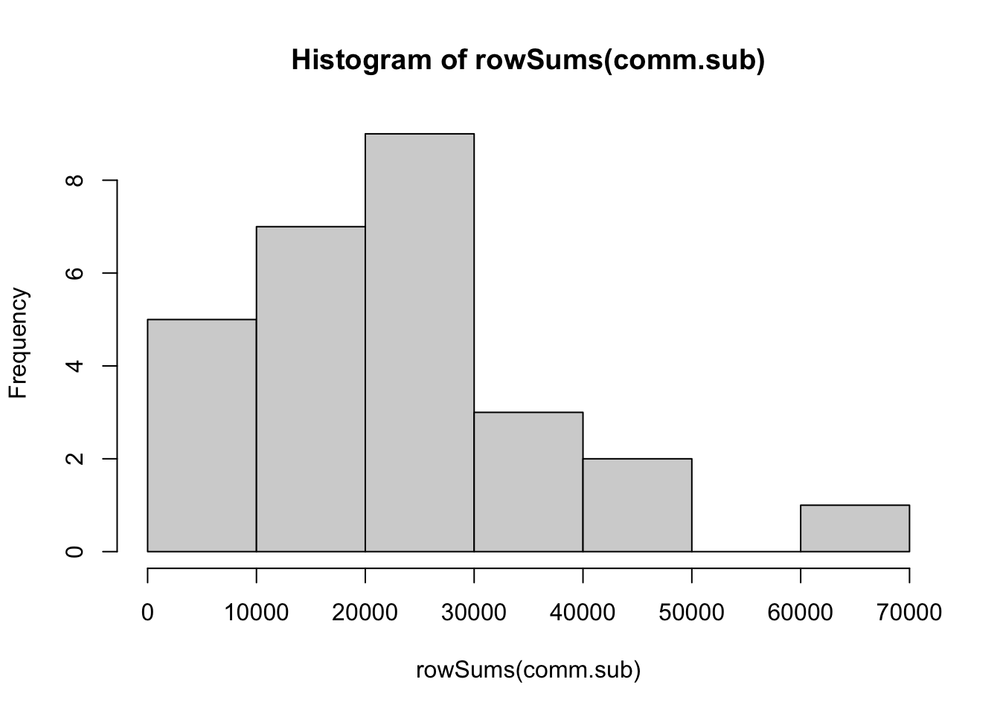
# log10 number of sequences per ASV
hist(log10(colSums(comm.sub)))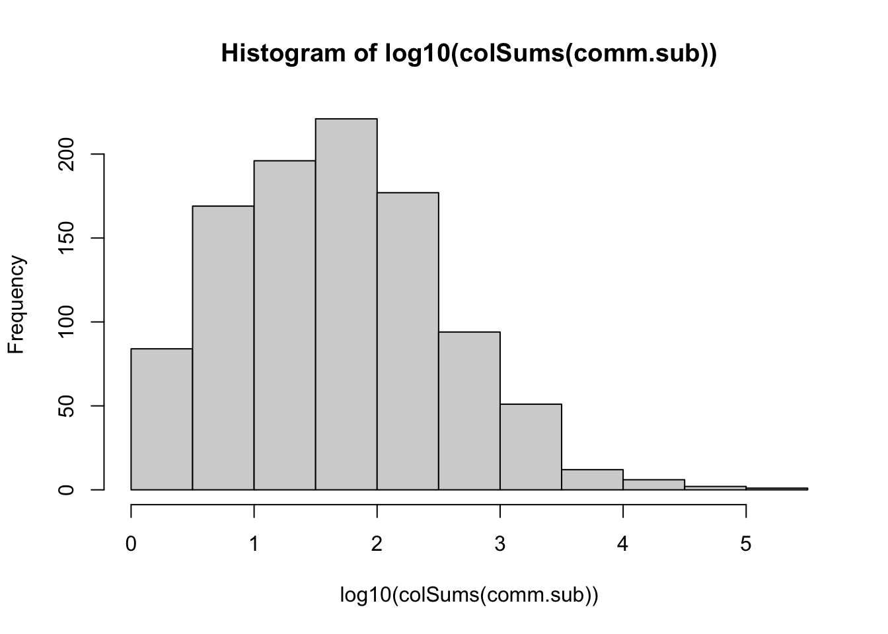
PCA on subset data
Before we normalize the data, let’s do the same PCA analysis on Hellinger-transformed ASV abundances, this time only for the samples that remain after getting rid of those with fewer than 5000 sequences/sample.
comm.sub.pca <- prcomp(decostand(comm.sub,"hellinger"))
# plot ordination results
ordiplot(comm.sub.pca, display="sites", type="text",cex=0.5)
ordiellipse(comm.sub.pca, metadata.sub$StandType, label=TRUE)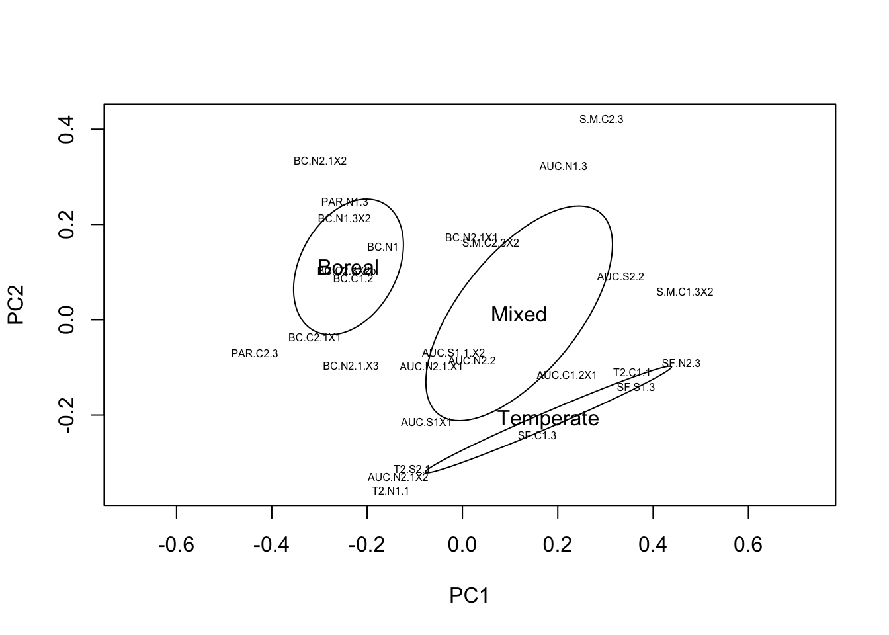
This looks much better, there are no longer negative controls or ‘outlier’ samples that are highly distinct compositionally from the other sampes. We can still clearly see the gradient in composition from boreal-mixed-temperate stand types, which is now falling along the first two axes of the ordination. As mentioned previously, we now need to normalize the data to account for the remaining variation in sequence depth per sample.
Data normalization for diversity analysis
Data normalization for the analysis of microbiome data is a subject of great debate in the scientific literature. Different normalization approaches have been suggested to control for the compositional nature of microbiome data, to maximize statistical power, to account for variation in sequencing depth among samples, and to meet the assumptions of different statistical analysis methods.
I recommend rarefaction as an essential data normalization approach that is needed when analysing the ecological diversity based on amplicon sequencing data sets. Because samples differ in sequencing depth, and this sequencing depth variation is due to the way we prepare libraries for sequencing and not any biological attribute of samples, we need to control for this variation. Rarefaction involves randomly selecting the same number of sequences per sample so that we can compare diversity metrics among samples.
The simplest justification for rarefaction is that that most measures of diversity are sensitive to sampling intensity. For example, taxa richness increases as we increase the number of individuals we sample from a community. If we take the same community and sample 10 individuals from it, and then sample 1000 individuals, we will obviously find more species when we sample more individuals. This is the fundamental problem that rarefaction addresses - we want to separate variation in diversity caused by some biological process from variation in diversity that is due to variation in library size.
Simulation and empirical studies have shown that rarefaction outperforms other normalization approaches when samples differ in sequencing depth (e.g. Weiss et al. 2017. Normalization and microbial differential abundance strategies depend upon data characteristics. Microbiome 5:27. https://doi.org/10.1186/s40168-017-0237-y).
Dr. Pat Schloss has an excellent series of videos on rarefaction as part of his Riffomonas project where he demonstrates very clearly why rarefaction is necessary when calculating diversity from sequencing data sets.
Rarefaction
To rarefy our data, we will randomly select the same number of sequences per sample for all of our samples. Because we already excluded samples containing fewer than 4000 sequences, we know that we can rarefy the remaining samples to at least 4000 sequences. Let’s look at the rarefaction curve for our subset of samples.
# What is the smallest number of sequences/sample for subset of samples?
min(rowSums(comm.sub))[1] 4966# Rarefaction curve for subset of samples
rarecurve(comm.sub, step=200, label=FALSE, xlim=c(0,8000))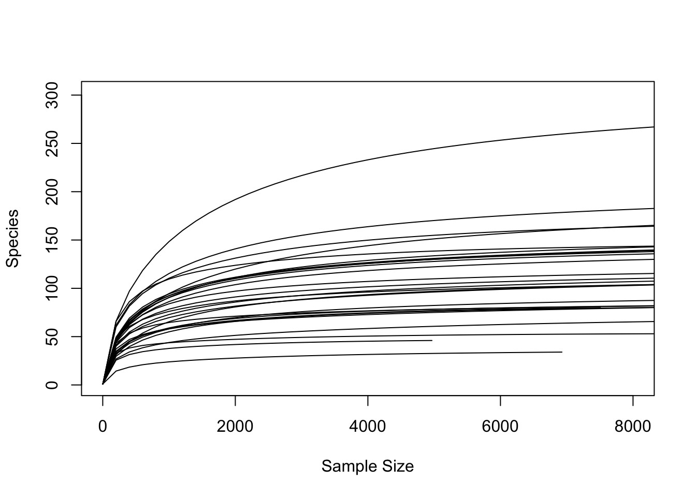
We can see that nearly all samples have reached a plateau of ASV richness by around 3000-4000 sequences/sample. The sample with the smallest number of sequences remaining contains 4966 sequences. We will randomly rarefy our data to this number of sequences. This way, we can feel confident that our samples contain enough sequences to adequately quantify the diversity of ASVs present in the sample even after rarefaction.
set.seed(0)
# Randomly rarefy samples
comm_rarfy <- rrarefy(comm.sub, sample = min(rowSums(comm.sub)))
# Remove any ASVs whose abundance is 0 after rarefaction
comm_rarfy <- comm_rarfy[,colSums(comm_rarfy)>1]
# Match ASV taxonomy to rarefied community
taxo_rarfy <- taxo.sub[colnames(comm_rarfy),]Check the effect of rarefaction
Let’s check to see what effect rarefaction had on the ASV richness of samples.
# Rarefaction is not expected to have a major influence on the diversity (as rarefaction curves have reached the plateau).
richness_raw <- rowSums((comm.sub>0)*1)
richness_rarfy <- rowSums((comm_rarfy>0)*1)
plot(richness_rarfy~richness_raw,xlab='number of ASVs in raw data',ylab='number of ASVs in rarefied data')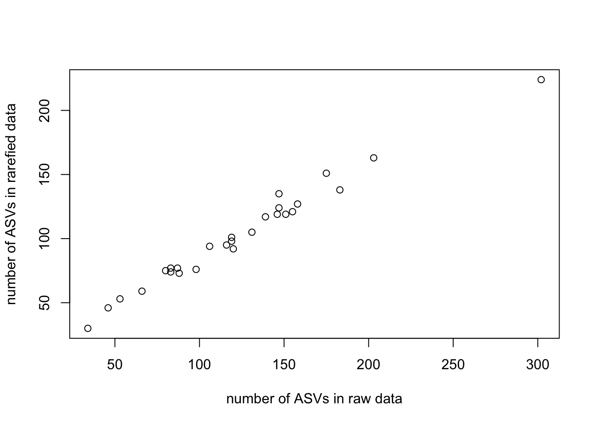
This supports the idea that rarefaction is not expected to have a major influence on diversity, since we saw in the rarefaction curves that richness reaches a plateau below the threshold number of sequences that we used for rarefaction. However, now that we have normalized the number of reads per sample, any differences in diversity among samples are not due to potential differences in library size. We are ready to begin our diversity analyses. We will use the rarefied community data set for these analyses.
Community analysis
Before we dive into analysing the diversity of leaf bacterial communities on sugar maples, this is a good time to return to the biological questions we posed in the article from which the data are taken.
Biological questions
In the study for which these data were collected, we looked at different taxonomic groups (bacteria, fungi, mycorrhizal fungi) living on sugar maple leaves and roots. Here we will concentrate just on leaf bacteria.
Our aim was to assess the relative influence of host genotype (seed provenance) and environment (transplanted site and region) in structuring the microbiome of sugar maple seedlings. When analyzing the data, let’s keep focused on these biological questions to help guide our decisions about how to analyze the data. We can take different perspectives to respond to this question by looking at different aspects of diversity. And beyond specific tests of our biological hypotheses, it is also useful to carry out basic descriptive analysis of community structure in order to determine what organisms were living in our samples.
In the metadata, the variables StandType and TransplantedSite represent the region and site into which the seedlings were planted (environment), and the variables SeedSourceRegion and SeedSourceOrigin represent the region and site from which the seeds were collected (genotype).
Visualize taxonomic composition of communities
A fundamental question we can address using microbiome data is simply ‘who is there’? What are the abundant taxa in different samples?
Phylum-level taxonomic composition of samples
Remember that for each ASV, we have taxonomic annotations at different ranks. Here we’ll look at the relative abundance of bacterial phyla in each sample. We can repeat these analyses at different taxonomic ranks, but as we go to finer ranks there will be more ASVs with missing data because we could not confidently determine their taxonomic annotation, so there will be more unidentified taxa. Nearly all ASVs have an annotation at the phylum level. We first manipulate the ASV data to create a new data object of phylum abundances, and then we can visualize those abundances.
# community data aggregation at a taxonomic level. e.g. phylum
# take the sum of each phylum in each sample
taxa.agg <- aggregate(t(comm_rarfy),by=list(taxo.sub[colnames(comm_rarfy),2]),FUN=sum)
# clean up resulting object
rownames(taxa.agg) <- taxa.agg$Group.1
phylum_data <- t(taxa.agg[,-1])
# convert abundances to relative abundances
phylum_data <- phylum_data/rowSums(phylum_data)
# remove rare phyla
phylum_data <- phylum_data[,colSums(phylum_data)>0.01]
# now reshape phylum data to long format
phylum_data <- reshape2::melt(phylum_data)
# rename columns
colnames(phylum_data)[1:2] <- c('Samples','Bacteria_phylum')
# now we can plot phylum relative abundance per sample
ggplot(phylum_data, aes(Samples, weight = value, fill = Bacteria_phylum)) +
geom_bar(color = "black", width = .7, position = 'fill') +
labs( y = 'Relative abundance (%)') +
scale_y_continuous(expand = c(0,0)) +
scale_fill_viridis_d(direction = -1L) +
theme_classic() +
coord_flip()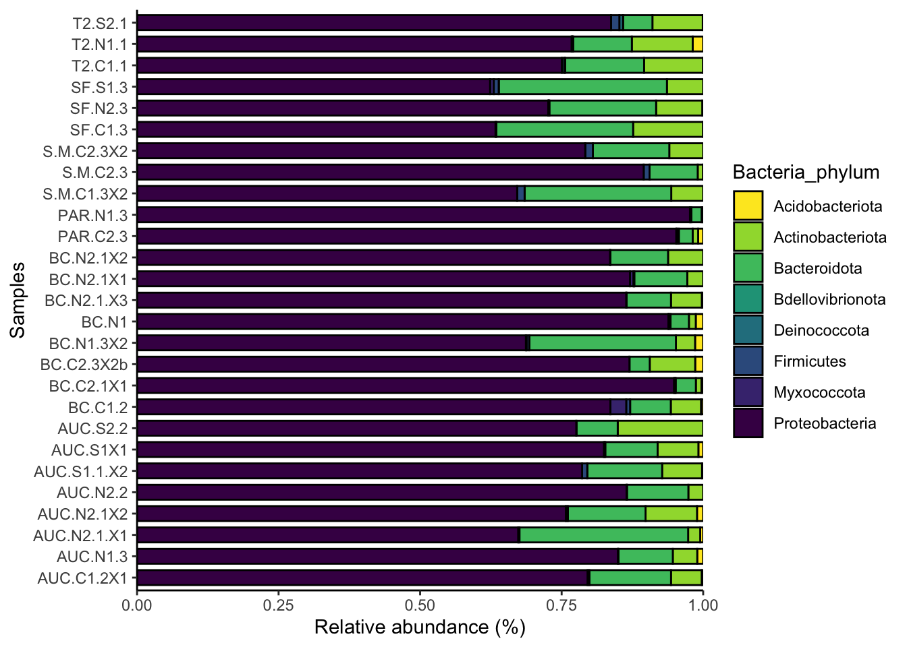
Phylum-level composition for each transplant site
It is also useful to see how taxonomic composition varies with respect to different variables we measured. For example, how does phylum-level taxonomic composition differ among different transplant sites?
# aggregate average phylum abundances per transplanted site
phylum_data_agg <- aggregate(phylum_data$value,by=list(metadata.sub[phylum_data$Samples,]$TransplantedSite,phylum_data$Bacteria_phylum),FUN=mean)
# rename columns
colnames(phylum_data_agg) <- c('TransplantedSite','Bacteria_phylum','value')
# now we can plot phylum abundance by transplant site
ggplot(phylum_data_agg, aes(TransplantedSite, weight =value, fill = Bacteria_phylum)) +
geom_bar(color = "black", width = .7, position = 'fill') +
labs( y = 'Relative abundance (%)') +
scale_y_continuous(expand = c(0,0)) +
scale_fill_viridis_d(direction = -1L) +
theme_classic()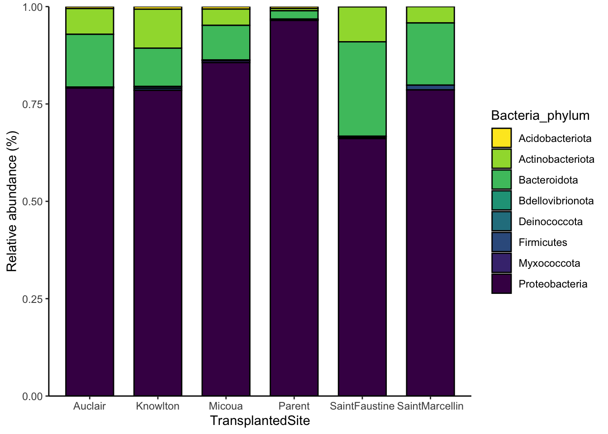
Community diversity (alpha diversity)
To look at how diversity differed among samples as a function of the different variables we are interested in, we’ll begin by looking at the alpha-diversity, or within-community diversity. Two commonly used measures of alpha diversity are ASV richness (the number of ASVs present in the sample), and the Shannon index, also sometimes referred to as Shannon diversity or Shannon diversity index, which measures both the number of taxa in the sample (ASV richness) as well as the equitability of their abundances (evenness).
Calculate ASV richness and Shannon diversity of bacterial community
# calculate ASV richness
# calculate Shannon index
Shannon <- diversity(comm_rarfy)
hist(richness_rarfy)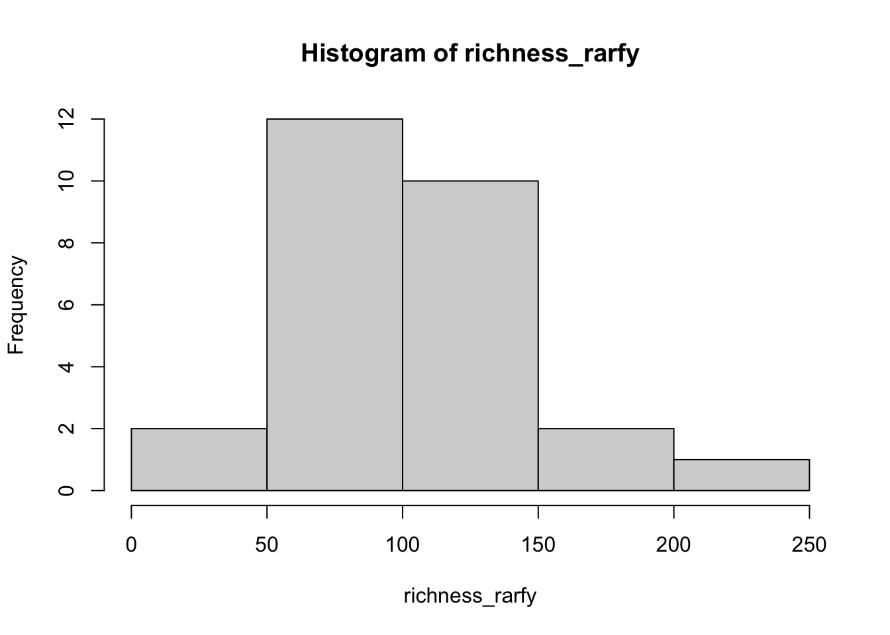
hist(Shannon)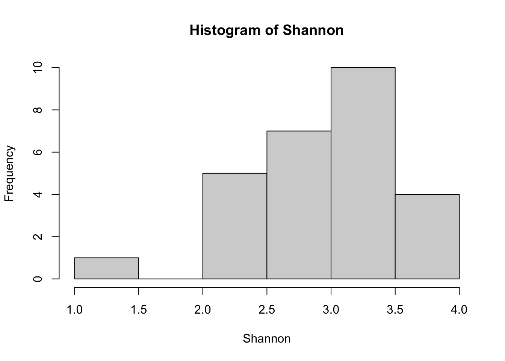
Compare bacterial diversity among categories
We can ask how diversity differs with respect to seedling genotype and environment. Here, let’s ask specifically whether leaf bacterial alpha diversity differs between stand types. See Figure 2 of the article by De Bellis et al. 2022 for a comparable analysis.
# create data frame to hold alpha diversity values by stand type
div_standtype <- data.frame(richness=richness_rarfy, Shannon=Shannon, standtype=metadata.sub$StandType)
# set up analysis to compare diversity among different pairs of stand types
my_comparisons <- list( c("Mixed", "Boreal"), c("Mixed", "Temperate"), c("Boreal", "Temperate") )
# plot ASV richness as a function of stand type
ggboxplot(div_standtype, x = "standtype", y = "richness", hide.ns=F,
color = "standtype", palette = "jco",add = "jitter") +
stat_compare_means(comparisons = my_comparisons,method = "t.test")[1] FALSE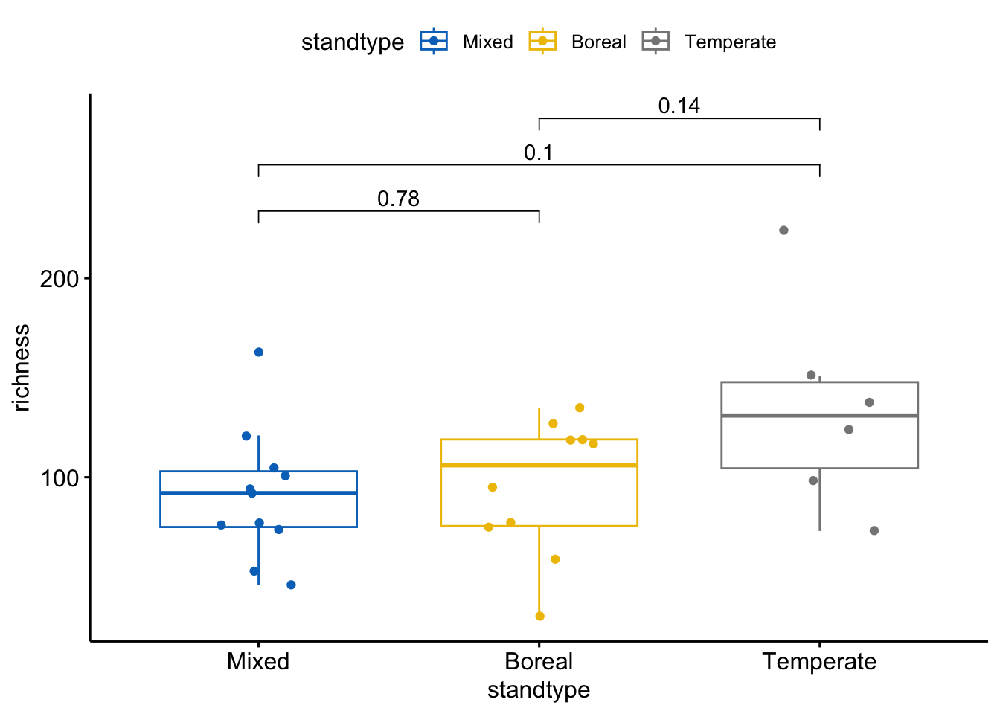
# plot Shannon index as a function of stand type
ggboxplot(div_standtype, x = "standtype", y = "Shannon",hide.ns=F,
color = "standtype", palette = "jco",add = "jitter")+
stat_compare_means(comparisons = my_comparisons,method = "t.test")[1] FALSE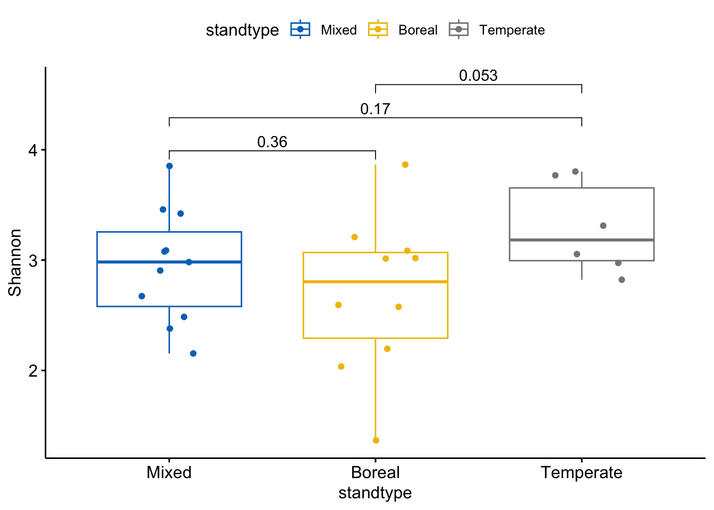
These figures indicate that ASV richness does not differ significantly among pairs of stand types. However, the Shannon index does differ somewhat between temperate and boreal stands, where the Shannon index tends to be lower in boreal stands than in temperate stands. These analyses are limited somewhat by the sample size that remains after removing low quality samples; in the original article (De Bellis et al 2022) we compared more sites which increased sample size enough that we found a significant (P<0.05) difference in the Shannon index between temperate and boreal stand types.
Community composition (beta diversity)
We can now look at the beta-diversity of the samples, which measures the between-community differences in composition.
Beta diversity approaches to studying composition involve calculating a measure of the compositional difference between pairs of communities (= beta diversity, dissimilarity, or distance). Then these distance metrics can be analysed using approaches such as ordination (to summarize the overall trends in community composition among samples) or PERMANOVA (to test whether groups of samples differ significantly in their composition).
There are a huge number of different beta diversity/dissimilarity metrics that have been used in ecology. There is an ongoing debate about the relative advantages and disadvantages of these beta diversity measures and approaches. There are several different beta diversity metrics and ordination approaches that work well based on simulation studies and empirical analysis. For those wanting to learn more about multivariate analysis and beta diversity approaches for the analysis of ecological communities, the book “Numerical Ecology with R” by Borcard, Gillet and Legendre is an excellent reference. Dr. Pierre Legendre also maintains a website with links to several excellent courses that serve as a complete introduction to multivariate methods in ecology.
In this workshop we will focus on a few different beta diversity metrics and ordination approaches that have been shown to perform well in theory and practise when applied to ecological community data. How should you choose which of these approaches to your own data? This is not an easy question to answer, as long as you are using a method that works well with ecological community data, there are different reasons to prefer one method over another. Ultimately, it can be useful to try different approaches and see if you obtain similar results with your data.
Ordination - Principal Components Analysis (PCA)
Principal components analysis (PCA) is a commonly used approach to analysing multivariate data. PCA uses eigenanalysis of Euclidean distances among samples computed from ASV abundance data to identify the axes of correlated variation that explain the most possible variation in your multivariate data. These axes correspond to major gradients of changes in community composition. We typically focus on the first few axes of the PCA ordination, since these axes should capture the majority of the variation in community composition among samples.
It’s important to note that PCA should never be used to analyze untranformed ecological community data. PCA is based on the Euclidean distance among samples. Ecological community data violate many of the assumptions of PCA - recall that there are many zeroes in our matrix of ASV abundances, and the distribution of abundance values among ASVs is very non-normal. Legendre and Gallagher (2001) showed that several transformations including the Chord and Hellinger transformation allow ecological community data matrices to be analyzed using PCA. Here we will use the Hellinger transformation to transform ASV abundances prior to analyzing them with a PCA ordination.
# Create Hellinger-transformed version of rarefied community data
comm_hel <- decostand(comm_rarfy,method='hellinger')
# PCA analysis of Hellinger-transformed community data
comm_hel_PCA <- prcomp(comm_hel)
# Summarize variance in beta diversity explained by PCA axes
summary(comm_hel_PCA)Importance of components:
PC1 PC2 PC3 PC4 PC5 PC6 PC7
Standard deviation 0.2599 0.20969 0.19519 0.1718 0.16095 0.15289 0.14424
Proportion of Variance 0.1497 0.09746 0.08445 0.0654 0.05742 0.05181 0.04612
Cumulative Proportion 0.1497 0.24712 0.33157 0.3970 0.45439 0.50620 0.55232
PC8 PC9 PC10 PC11 PC12 PC13 PC14
Standard deviation 0.13835 0.1327 0.12813 0.12268 0.12067 0.11446 0.11003
Proportion of Variance 0.04242 0.0390 0.03639 0.03336 0.03228 0.02904 0.02684
Cumulative Proportion 0.59474 0.6338 0.67014 0.70350 0.73577 0.76481 0.79165
PC15 PC16 PC17 PC18 PC19 PC20 PC21
Standard deviation 0.10440 0.10234 0.09813 0.09351 0.09258 0.09083 0.08976
Proportion of Variance 0.02416 0.02321 0.02134 0.01938 0.01900 0.01829 0.01786
Cumulative Proportion 0.81581 0.83902 0.86037 0.87975 0.89875 0.91704 0.93490
PC22 PC23 PC24 PC25 PC26 PC27
Standard deviation 0.08279 0.08176 0.07641 0.07181 0.06955 2.431e-16
Proportion of Variance 0.01519 0.01482 0.01294 0.01143 0.01072 0.000e+00
Cumulative Proportion 0.95009 0.96491 0.97785 0.98928 1.00000 1.000e+00# Plot PCA results
ordiplot(comm_hel_PCA, display = 'sites', type = 'text',cex=0.8, main="PCA on Hellinger transformed data")
# Add ellipses around samples from different stand types
ordiellipse(comm_hel_PCA, metadata.sub$StandType, label=TRUE)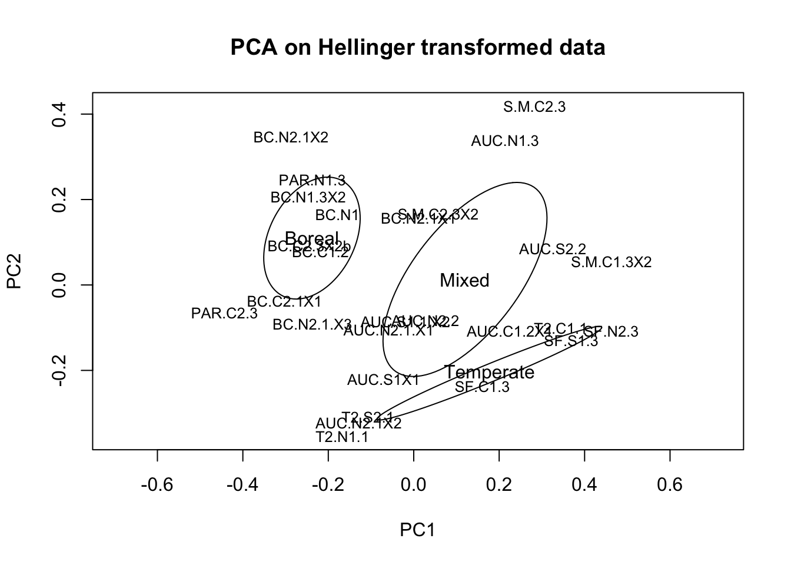
The PCA ordination diagram indicates the overall compositional similarity of samples. Samples that are close together in the ordination space contain similar ASVs with similar abundances. We can see that the gradient in community composition among different stand types is visible along the first two axes. Samples from each stand type tend to contain compositionally similar leaf bacterial communities.
Recall that when we were first looking at the composition of communities in our samples (prior to subsetting and rarefaction), we obtained a similar looking result. As noted, because we used a rarefaction threshold that was sufficient for the rarefaction curves of the samples to reach a plateau in ASV richness, we do not expect major differences between the analysis of rarefied versus non-rarefied data. However, by analyzing the rarefied data we are now confident that the differences in composition among the samples are due to true differences in community composition and not due to differences in library size among samples.
Ordination - Non-metric Multidimensional Scaling (NMDS)
Another commonly used ordination approach in ecology is non-metric multidimensional scaling (NMDS). NMDS can be used with any beta diversity distance metric. Unlike PCA, NMDS is not based on eigenanalysis of the distance metric. Rather, NMDS uses an algorithm to find an ordination of samples in a few dimensions that represents as best as possible the rank transformed pairwise distances among samples measured with the original distance metric. When carrying out a NMDS analysis, rather than obtaining many PCA axes, the user specifies how many axes to identify. NMDS analysis is based on a heuristic algorithm that may give slightly different results when run multiple times on the same data, whereas PCA has a unique analytical solution.
NMDS can be used with any distance metric. Commonly in microbial ecology it is used with the Bray-Curtis distance. The Bray-Curtis distance, like the Hellinger distance, has been shown to perform well compared with other distance measures (Faith et al. 1987, Gallagher and Legendre 2001).
Here we’ll calculate a NMDS ordination using Bray-Curtis distance.
# NMDS ordination based on Bray-Curtis distances
comm_NMDS <- metaMDS(comm_hel, distance="bray", trace=FALSE)
ordiplot(comm_NMDS, cex = 0.5, type = 'text', display='sites')
ordiellipse(comm_NMDS, metadata.sub$StandType, label=TRUE)
# overlay the direction of latitude effect on bacteria community composition
ef <- envfit(comm_NMDS, metadata.sub$TransplantedSiteLat)
rownames(ef$vectors$arrows)='Latitude'
plot(ef)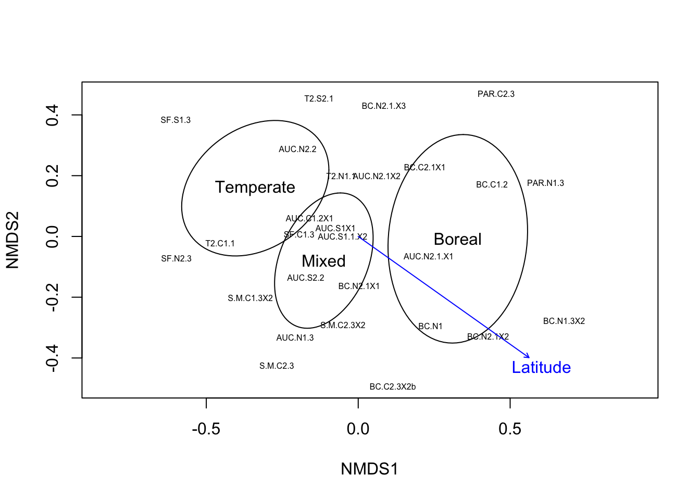
Here we can see that the NMDS ordination based on Bray-Curtis distances among samples looks quite similar to the PCA ordination, with community composition differing among different stand types. We have also added an arrow indicating the correlation between latitude and the ordination axes, which also supports the idea that communities vary as we move from boreal stands in the north to temperate stands in the south.
PERMANOVA
Ordination analyses allow us to visualize how the composition of communities differs among samples and how it relates to different variables in a qualitative way. For example, we can see from the ordination diagrams above that it seems that community composition differs among stand types. We can statistically test whether stand types differ in composition using permutational multivariate analysis of variance (PERMANOVA). A PERMANOVA works in a way similar to an ANOVA, but with multivariate compositional data. PERMANOVA tests indicate whether community composition (beta diversity) differs among groups of samples.
Here we can first use a PERMANOVA to test whether community composition differs among stand types. As with ordination methods, a PERMANOVA can be run on any distance metric. Let’s try computing a PERMANOVA using both Hellinger distance (used for the PCA) and Bray-Curtis distance (used for the NMDS).
# set number of permutations for PERMANOVA
perm <- how(nperm = 999)
# PERMANOVA on Hellinger-transformed Euclidean distances
adonis2(formula = dist(comm_hel) ~ StandType, data = metadata.sub, permutations = perm)Permutation test for adonis under reduced model
Terms added sequentially (first to last)
Permutation: free
Number of permutations: 999
adonis2(formula = dist(comm_hel) ~ StandType, data = metadata.sub, permutations = perm)
Df SumOfSqs R2 F Pr(>F)
StandType 2 1.8390 0.15678 2.2311 0.001 ***
Residual 24 9.8911 0.84322
Total 26 11.7301 1.00000
---
Signif. codes: 0 '***' 0.001 '**' 0.01 '*' 0.05 '.' 0.1 ' ' 1# PERMANOVA on Bray-Curtis distances
adonis2(formula = vegdist(comm_rarfy, method="bray") ~ StandType, data = metadata.sub, permutations = perm)Permutation test for adonis under reduced model
Terms added sequentially (first to last)
Permutation: free
Number of permutations: 999
adonis2(formula = vegdist(comm_rarfy, method = "bray") ~ StandType, data = metadata.sub, permutations = perm)
Df SumOfSqs R2 F Pr(>F)
StandType 2 0.9716 0.17856 2.6085 0.001 ***
Residual 24 4.4697 0.82144
Total 26 5.4413 1.00000
---
Signif. codes: 0 '***' 0.001 '**' 0.01 '*' 0.05 '.' 0.1 ' ' 1Both of these analyses indicate that community composition differs significantly among stand types, explaining around 16-18% of variation in the distance metric.
PERMANOVA can also be used to test more complex experimental designs. Here, let’s replicate the analyses by De Bellis et al. (2022). We used PERMANOVA on Bray-Curtis distances to measure the relative importance of transplanted region and site (environment) versus origin region and site (genotype) in determining the composition of leaf bacterial communities. Site is nested within region for both variable types, which we represent using “/” in the formula (region/site).
permanova.bc <- adonis2(formula = vegdist(comm_rarfy, method="bray") ~ StandType/TransplantedSite * SeedSourceRegion/SeedSourceOrigin, data = metadata.sub, permutations = perm)
print(permanova.bc)Permutation test for adonis under reduced model
Terms added sequentially (first to last)
Permutation: free
Number of permutations: 999
adonis2(formula = vegdist(comm_rarfy, method = "bray") ~ StandType/TransplantedSite * SeedSourceRegion/SeedSourceOrigin, data = metadata.sub, permutations = perm)
Df SumOfSqs
StandType 2 0.9716
SeedSourceRegion 2 0.2277
StandType:TransplantedSite 3 0.6410
StandType:SeedSourceRegion 3 0.5562
StandType:TransplantedSite:SeedSourceRegion 3 0.7350
StandType:TransplantedSite:SeedSourceRegion:SeedSourceOrigin 5 1.1043
Residual 8 1.2056
Total 26 5.4413
R2 F
StandType 0.17856 3.2236
SeedSourceRegion 0.04184 0.7554
StandType:TransplantedSite 0.11780 1.4177
StandType:SeedSourceRegion 0.10222 1.2302
StandType:TransplantedSite:SeedSourceRegion 0.13507 1.6256
StandType:TransplantedSite:SeedSourceRegion:SeedSourceOrigin 0.20294 1.4654
Residual 0.22157
Total 1.00000
Pr(>F)
StandType 0.001 ***
SeedSourceRegion 0.835
StandType:TransplantedSite 0.058 .
StandType:SeedSourceRegion 0.191
StandType:TransplantedSite:SeedSourceRegion 0.019 *
StandType:TransplantedSite:SeedSourceRegion:SeedSourceOrigin 0.031 *
Residual
Total
---
Signif. codes: 0 '***' 0.001 '**' 0.01 '*' 0.05 '.' 0.1 ' ' 1This analysis shows that, as mentioned by De Bellis et al. (2022), stand type of planting was the most important variable explaining variation in leaf bacterial community composition. There was a marginally significant variation among transplanted sites. There were also significant interactions among transplant region and site as a function of seed source region and seed source site of origin, indicating that the leaf bacterial communities of some genotypes respond differently to different environments. Taken together, this analysis indicates that environment (transplant region and site) have a greater impact on the composition of leaf bacterial communities than genotype, although there is also an interaction between genotype and environment.
Differentially abundant taxa
By analyzing alpha and beta diversity, we have determined that some groups of samples differ in their diversity and composition. But measures of diversity look at the entire community. We may also be interested in knowing which individual taxa differ in abundance among groups of samples. To address this question we can use differential abundance analysis. There are many methods that can be used for differential abundance analysis, and as for other ecological analysis there is active debate about which methods should be used to detect differences in taxa abundances between groups of samples.
Differential abundance analysis allows you to identify differentially abundant taxa between two groups. There are many methods for this type of analysis such as ALDEx2, ANCOM-BC, and DESeq2. Several recent articles have compared the performance of these differential abundance approaches when applied to microbiome data (Calgaro et al. (2020), Nearing et al. (2022)), finding that some methods perform better than others, but also finding that different methods are sensitive to different aspects of data structure and with differing statistical power and sensitivity. Here we will compare two different methods for detecting differentially abundant taxa.
Having seen a clear difference in leaf bacterial community composition between temperate and boreal forest stand types, we may ask which bacterial ASVs are differentially abundant between temperate versus boreal forest stand types.
DESeq2
The DESeq2 approach (Love et al. 2014. Genome Biol 15:550) models taxa abundances using a negative binomial distribution to detect taxa that are differentially abundant between groups. This approach was initially developed for gene expression analyses, but it is commonly used in the analysis of differential taxa abundances in microbial ecology.
# conduct DESeq analysis of ASV abundances between temperate and boreal stand types
# We add a pseudocount (+1) to each abundance value to avoid zeroes
countdata <- data.frame(ASV=colnames(comm_rarfy),t(comm_rarfy+1))
metas <- metadata.sub
metas$StandType <- relevel(as.factor(metas$StandType),ref='Boreal')
dds <- DESeqDataSetFromMatrix(countData=countdata,
colData=metas,
design=~StandType, tidy = TRUE)converting counts to integer modedds2 <- DESeq(dds, fitType="local", quiet=TRUE)
res <- results(dds2, name="StandType_Temperate_vs_Boreal")
#coef of differently abundant ASV between temperate and boreal forest
head(res[order(res$padj),])log2 fold change (MLE): StandType Temperate vs Boreal
Wald test p-value: StandType Temperate vs Boreal
DataFrame with 6 rows and 6 columns
baseMean log2FoldChange lfcSE stat pvalue padj
<numeric> <numeric> <numeric> <numeric> <numeric> <numeric>
ASV_8 102.71993 6.31596 1.070810 5.89830 3.67260e-09 1.31686e-06
ASV_37 16.25372 5.24749 0.906315 5.78992 7.04201e-09 1.31686e-06
ASV_94 8.43527 4.85485 0.860202 5.64385 1.66291e-08 2.07309e-06
ASV_26 29.32340 5.88306 1.086821 5.41309 6.19468e-08 5.79203e-06
ASV_22 36.19921 5.19054 0.994117 5.22126 1.77713e-07 1.32929e-05
ASV_44 20.59886 -5.09305 1.001330 -5.08629 3.65139e-07 2.27603e-05#Number of significantly different ASVs (adjusted_p_value<0.05)
dim(res[is.na(res$padj)==F&res$padj<0.05,])[1][1] 77sig_des <- rownames(res[is.na(res$padj)==F&res$padj<0.05,])
# show the distribution of these marker ASV in a heatmap
metatoshow <- subset(metas,!metas$StandType%in%'Mixed')
datatoshow <- comm_rarfy[rownames(metatoshow),rownames(res[order(res$padj),])[1:20]]
annotation_col = data.frame(standtype = as.factor(metatoshow$StandType))
rownames(annotation_col)=rownames(datatoshow)
pheatmap(t(datatoshow),scale= "row", annotation_col = annotation_col,cluster_cols = F)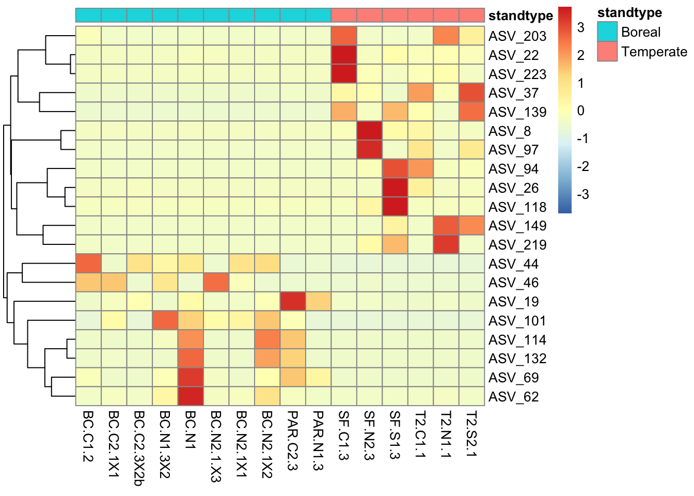
ANCOM-BC
The ANCOM-BC approach (Lin and Peddada. 2020. Nat. Comm. 35:14) detects differentially abundant taxa by analysis of compositions of microbiomes with bias correction. Nearing et al. (2022) found this method to be among the best-performing methods for detection of differentially abundant taxa.
# conduct ANCOM-BC analysis of differentially abundant taxa between boreal/temperate stand types
ASV <- otu_table(countdata[,-1],taxa_are_rows<-T)
TAX <- tax_table(as.matrix(taxo.sub))
META <- sample_data(metas)
phyloseqobj = phyloseq(ASV, TAX, META)
ancob <- ancombc(phyloseq=phyloseqobj,formula='StandType',p_adj_method = "holm", zero_cut = 0.90, lib_cut = 1000,
group = 'StandType', struc_zero = TRUE, neg_lb = F,
tol = 1e-5, max_iter = 100, conserve = TRUE,
alpha = 0.05, global = TRUE)
res_ancob <- ancob$res
#show coefficients of differential abundance test between temperate vs. boreal
coef_ancob <- data.frame(beta=res_ancob$beta$StandTypeTemperate,se=res_ancob$se$StandTypeTemperate,W=res_ancob$W$StandTypeTemperate,
p_val=res_ancob$p_val$StandTypeTemperate,p_adj=res_ancob$q_val$StandTypeTemperate,sign_dif=res_ancob$diff_abn$StandTypeTemperate,
row.names = rownames(res_ancob$beta))
coef_ancob <- coef_ancob[order(coef_ancob$p_adj),]
head(coef_ancob) beta se W p_val p_adj sign_dif
ASV_44 -2.2721929 0.4081187 -5.567481 2.584489e-08 2.101189e-05 TRUE
ASV_22 2.5469174 0.5179469 4.917333 8.773119e-07 7.123773e-04 TRUE
ASV_11 2.2662741 0.4980824 4.549998 5.364645e-06 4.350727e-03 TRUE
ASV_101 -1.8558870 0.4108073 -4.517658 6.252726e-06 5.064708e-03 TRUE
ASV_37 2.3964439 0.5694741 4.208170 2.574473e-05 2.082749e-02 TRUE
ASV_129 0.4651886 0.1182296 3.934619 8.332862e-05 6.732952e-02 FALSE#Number of significantly different ASVs (adjusted p_value<0.05)
dim(coef_ancob[coef_ancob$p_adj<0.05,])[1] 5 6sig_ancob <- rownames(coef_ancob[1:dim(coef_ancob[coef_ancob$p_adj<0.05,])[1],])
# show the significant ASVs
metatoshow <- subset(metas,!metas$StandType%in%'Mixed')
datatoshow <- comm_rarfy[rownames(metatoshow),sig_ancob]
annotation_col = data.frame(standtype = as.factor(metatoshow$StandType))
rownames(annotation_col)=rownames(datatoshow)
pheatmap(t(datatoshow),scale= "row", annotation_col = annotation_col,cluster_cols = F)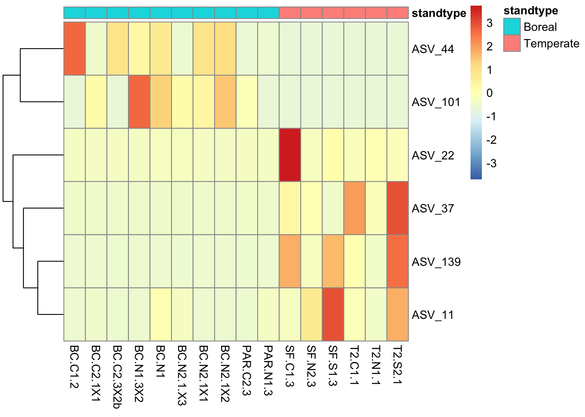
Comparing differentially abundant taxa among methods
In a comparison between boreal and temperate forest stand types, ANCOM-BC and DESeq2 detected different numbers of differentially abundant ASVs. As noted earlier, there is still debate about which methods perform best for differentially abundant taxa detection. While DESeq2 and ANCOM identified differentially abundant taxa that are potentially unique to each method, there may be some ASVs that were detected as differentially abundant using both methods. This type of cross-method comparison can help us to identify statistically robust results - if taxa are differentially abundant enough to be detected by multiple methods, they should differ strongly in their abundance between groups. Let’s look at the distribution of these differentially abundant ASVs identified by both methods.
# identify significantly differentially abundant ASVs according to both methods
sig_both <- sig_des[sig_des%in%sig_ancob]
sig_both[1] "ASV_11" "ASV_22" "ASV_37" "ASV_44" "ASV_101"# show the distribution of these differentially abundant ASVs
metatoshow <- subset(metas,!metas$StandType%in%'Mixed')
datatoshow <- comm_rarfy[rownames(metatoshow),sig_both]
annotation_col = data.frame(standtype = as.factor(metatoshow$StandType))
rownames(annotation_col)=rownames(datatoshow)
pheatmap(t(datatoshow),scale= "row", annotation_col = annotation_col,cluster_cols = F)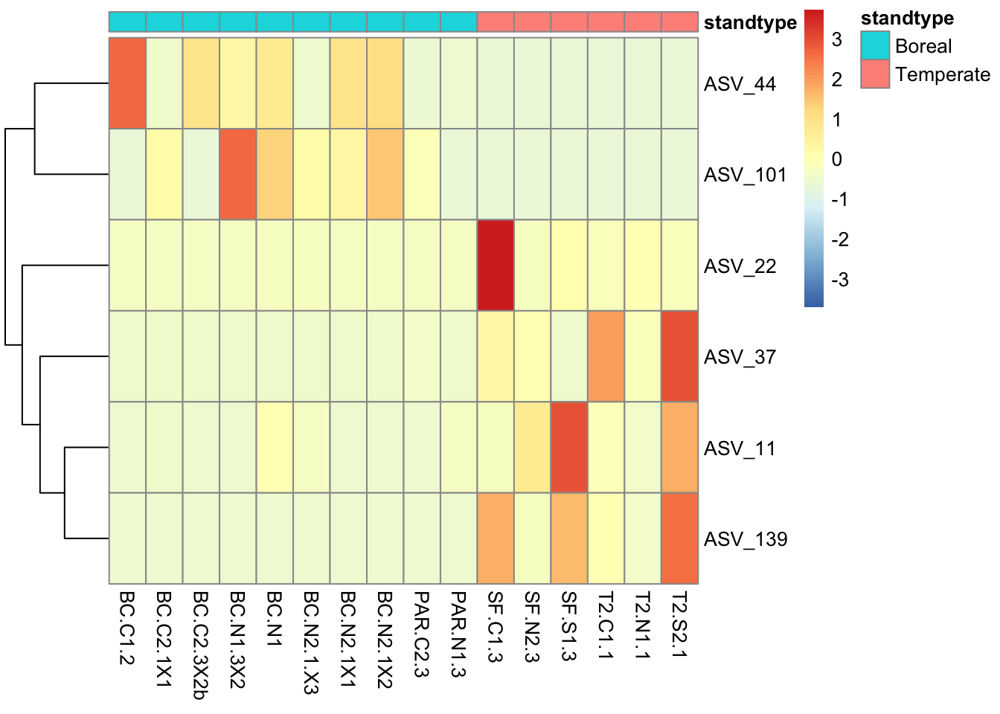
We can also inspect the taxonomic annotations of these differentially abundant ASVs.
taxo_rarfy[sig_both,] Kingdom Phylum Class Order
ASV_11 "Bacteria" "Proteobacteria" "Alphaproteobacteria" "Rhizobiales"
ASV_22 "Bacteria" "Bacteroidota" "Bacteroidia" "Cytophagales"
ASV_37 "Bacteria" "Proteobacteria" "Alphaproteobacteria" "Sphingomonadales"
ASV_44 "Bacteria" "Proteobacteria" "Gammaproteobacteria" "Enterobacterales"
ASV_101 "Bacteria" "Proteobacteria" "Alphaproteobacteria" "Rhizobiales"
Family Genus Species
ASV_11 "Beijerinckiaceae" "Methylobacterium-Methylorubrum" NA
ASV_22 "Hymenobacteraceae" "Hymenobacter" NA
ASV_37 "Sphingomonadaceae" "Sphingomonas" NA
ASV_44 "Shewanellaceae" "Shewanella" "algae/haliotis"
ASV_101 "Beijerinckiaceae" "Methylocella" NA Final steps - clean up and save data objects and workspace
We have now completed our ecological analyses of leaf bacterial communities. You may want to save the R workspace containing all the different data objects so that you can reload it in the future without having to re-run the analyses.
## Save entire R workspace to file
save.image("Microbiome-ecological-analysis-workspace.RData")